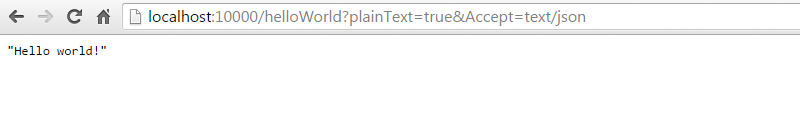

REST Servlet API
Defines an API for defining REST resources as servlets.
Table of Contents
Introduction
Hello World Example
Class Hierarchy
REST Servlets
REST Java Method Signature
Path
Matchers
Request Content
Form Posts
Multipart Form Posts
Response Content
OPTIONS Pages
Serializers
Parsers
Properties
Filters
Guards
Converters
Child Resources
Localized Messages
Encoders
String Variables
Static Files
Listener Methods
Stylesheet
Default Headers
Handling Errors / Logging
Configuration Files
Annotation Inheritence
HTTP Status Codes
Overloaded HTTP Methods
Built-In Parameters
Defining your own serializers/parsers
Response Handlers
Other Notes
Using with OSGi
POJOs Convertable From Strings
Address Book Resource
1 - Introduction
The juno-server.jar library allows you to quickly wrap POJOs and expose them as full-fledged REST resources served up in a servlet container using a bare-minimum amount of code.
The primary goal for Juno was to make it as easy as possible to implement easy-to-read and self-documenting REST resources using very little code.
One of the biggest advantages of the Juno REST framework over similar architectures is that it hides the serialization layer from the developer.
The developer can work entirely with POJOs and let the Juno framework handle all the serialization and parsing work.
The developer need never know what the Accept or Content-Type or Accept-Encoding (etc...) header values are because those details are all handled by the framework.
The API builds upon the existing JEE Servlet API.
The root class, {@link com.ibm.juno.server.RestServlet} is nothing but a specialized {@link javax.servlet.http.HttpServlet}, and the
{@link com.ibm.juno.server.RestRequest} and {@link com.ibm.juno.server.RestResponse} classes are nothing more than specialized {@link javax.servlet.http.HttpServletRequest} and
{@link javax.servlet.http.HttpServletResponse} objects.
This allows maximum flexibility for the developer since you can let Juno handle operations such as serialization, or you can revert
to the existing servlet APIs to do low-level processing of requests yourself.
It also means you need nothing more than a Servlet container such as Jetty to use the REST framework.
Features
- Serializes POJOs to JSON, XML, HTML, URL-Encoding, UON, RDF/XML, N-Triple, Turtle, N3, SOAP, or Java-serialized-object based on
value of Accept header.
No user code is required to handle these types.
- Extensible design that provides ability to override existing content type handlers, or add the ability to handle other kinds of content types.
- Parses content of POST/PUT request bodies to POJOs.
- Automatic built-in ability to serialize POJO metadata to JSON+SCHEMA, XML+SCHEMA, or HTML+SCHEMA based on Accept header.
- Automatic negotiation of output Writer based on HTTP headers.
- Automatic handling of Accept-Charset header for all character sets supported by the JVM.
- Automatic handling of Accept-Encoding header with registered encoders.
- Automatic error handling.
- Automatic 401 errors (Unauthorized) on failed guards.
- Automatic 404 errors (Not Found) on unmatched path patterns.
- Automatic 405 errors (Method Not Implemented) on unimplemented methods.
- Automatic 406 errors (Not Acceptable) when no matching serializer was found to handle the Accept header.
- Automatic 412 errors (Precondition Failed) when all matchers failed to match.
- Automatic 415 errors (Unsupported Media Type) when no matching parser was found was found to handle the Content-Type header.
- Automatic 500 errors on uncaught exceptions.
- Self-documenting REST interfaces.
- Various useful debugging features that make debugging using a browser extremely simple...
- Ability to pass HTTP header values as URL GET parameters (e.g. &Accept=text/xml).
- Ability to pass HTTP content on PUT/POST requests as a URL GET parameter (e.g. &content={foo:"bar"}).
- Ability to simulate non-GET requests using a &method GET parameter (e.g. &method=POST).
- Ability to force "text/plain" on response using GET parameter &plainText=true.
- Ability to implement overloaded HTTP methods through the use of the &method attribute (e.g. &method=FOO).
- Ability to match URL patterns (e.g. /foo/{fooId}/bar/{barId}) against URLs (e.g. /foo/123/bar/456/bing).
- Ability to associate guards at the resource or method levels through annotations.
Typically useful for security, but can be used for a variety of purposes.
- Ability to associate converters at the resource or method levels through annotations.
Typically useful for performing conversions on input and output, such as for supporting older input and output formats.
Many of the examples in this document are pulled directly from the microservice-samples-project.zip project.
2 - Hello World Example
A REST resource is an implementation of {@link com.ibm.juno.server.RestServlet}, which itself is simply an extension of {@link javax.servlet.http.HttpServlet}.
In this example, we define a resource called HelloWorldResource.
This example is located in the microservice-samples-project.zip project.
It's assumed the reader is familiar with defining servlets in web applications.
Like any servlet, we could define our resource in the web.xml file of the web application like so...
<?xml version="1.0" encoding="UTF-8"?>
<web-app version="2.3">
<servlet>
<servlet-name>HelloWorldResource</servlet-name>
<servlet-class>com.ibm.sample.HelloWorldResource</servlet-class>
</servlet>
<servlet-mapping>
<servlet-name>HelloWorldResource</servlet-name>
<url-pattern>/*</url-pattern>
</servlet-mapping>
</web-app>
Our servlet code is shown below:
/**
* Sample REST resource that prints out a simple "Hello world!" message.
*/
@RestResource(
messages="nls/HelloWorldResource",
properties={
@Property(name=HTMLDOC_links, value="{up:'$R{requestParentURI}',options:'?method=OPTIONS'}")
}
)
public class HelloWorldResource extends Resource {
/** GET request handler */
@RestMethod(name="GET", path="/*")
public String sayHello() {
return "Hello world!";
}
}
The messages annotation points to a properties file on the classpath whose contents are shown below:
#--------------------------------------------------------------------------------
# HelloWorldResource labels
#--------------------------------------------------------------------------------
label = Hello World sample resource
description = Simplest possible resource
sayHello = Responds with "Hello world!"
It doesn't much simpler than that.
In this case, we're simply returning a string that will be converted to any of the supported languages (e.g. JSON, XML, HTML, ...).
However, we could have returned any POJO consisting of beans, maps, collections, etc...
The {@link com.ibm.juno.server.RestServletDefault} class that we're using here is a subclass of {@link com.ibm.juno.server.RestServlet} that provides default support for a variety of content types.
Implementers can choose to use this class, or create their own subclass of {@link com.ibm.juno.server.RestServlet} with their own specialized serializers and parsers.
If you were to start up this servlet and view it with a browser, you would see this:

The Juno REST interface is designed to make it easy to interact with resources using nothing but a browser.
Therefore, several built-in features are provided for making it easy to do so.
Specifically, we'll be using these available URL parameters...
- &plainText=true - If specified, then the Content-Type on the response is always "text/plain" regardless of the data format.
- &Accept=X - Specify the content type of the response.
In a browser, "text/html" is the default content type, but this parameter can be used to override the content type on the response.
Note: The behavior is identical to setting the Accept header on the request.
In fact, Juno allows ANY HTTP request headers to be specified as URL parameters for debugging purposes.
Using the plainText parameter, we can view the HTML as plain text...

You'll notice that the HTML view has a simple stylesheet associated with it to improve the look of the interface.
It is possible to specify your own stylesheet, but the default styles will usually suffice for most purposes.
When accessed through a browser, the content type will default to HTML (based on the value of the Accept HTTP header).
Let's use the &Accept URL paramter to override the Accept HTTP header to view this servlet in other formats...
In the case of JSON, we're serialize a single string, so it gets rendered as a JSON fragment....

...or as XML...

...or any of the other supported languages.
If you click the OPTIONS link on the page, you'll see the results from an HTTP OPTIONS request:

The OPTIONS page is generated automatically by introspection of the class itself combined with
labels in the messages properties file.
It's composed of a POJO that gets serialized just like any other POJO.
Therefore, the POJO can be searialized to any of the supported languages, like JSON.

3 - Class Hierarchy
The class hierarchy for the REST servlet class is shown below:
- {@link javax.servlet.http.HttpServlet javax.servlet.http.HttpServlet}
- {@link com.ibm.juno.server.RestServlet com.ibm.juno.server.RestServlet}
Contains all the main logic.
- {@link com.ibm.juno.server.RestServletDefault com.ibm.juno.server.RestServletDefault}
Provides a default set of serializers, parsers, options page, stylesheet, and other common settings.
Developers will typically subclass this when creating REST resources in JEE environments.
- {@link com.ibm.juno.microservice.Resource com.ibm.juno.microservice.Resource}
Subclass intented to be used in REST microservices.
Developers will typically subclass this when creating microservices.
- {@link com.ibm.juno.server.RestServletGroupDefault com.ibm.juno.server.RestServletGroupDefault}
A default implementation for "router" pages.
- {@link com.ibm.juno.microservice.ResourceGroup com.ibm.juno.microservice.ResourceGroup}
Subclass intented to be used in REST microservices.
- {@link com.ibm.juno.server.remoteable.RemoteableServlet com.ibm.juno.server.remoteable.RemoteableServlet}
REST servlet for implementing remoteable proxy interfaces.
- {@link com.ibm.juno.server.jena.RestServletJenaDefault com.ibm.juno.server.jena.RestServletJenaDefault}
Same as {@link com.ibm.juno.server.RestServletDefault}, but adds RDF support.
- {@link com.ibm.juno.microservice.ResourceJena com.ibm.juno.microservice.ResourceJena}
Subclass intented to be used in REST microservices.
- {@link com.ibm.juno.server.jena.RestServletJenaGroupDefault com.ibm.juno.server.jena.RestServletJenaGroupDefault}
Same as {@link com.ibm.juno.server.RestServletGroupDefault}, but adds RDF support.
com.ibm.team.repository.service.JazzRestResource
Parent class in Jazz Foundation for REST-based services.
com.ibm.team.repository.service.JazzDefaultRestResource
Provides a default set of serializers, parsers, options page, stylesheet, and other common settings.
The servlets with RDF support require Jena on the classpath.
All other serializers and parsers do not have any external library dependencies.
For this reason, we have separate servlets for supporting RDF so that you don't need Jena if you don't need to support RDF.
The {@link com.ibm.juno.server.RestRequest} and {@link com.ibm.juno.server.RestResponse} classes described later also extend from their servlet equivalents:
- {@link javax.servlet.http.HttpServletRequest javax.servlet.http.HttpServletRequest}
- {@link com.ibm.juno.server.RestRequest com.ibm.juno.server.RestRequest} - Augmented with specialized REST methods.
- {@link javax.servlet.http.HttpServletResponse javax.servlet.http.HttpServletResponse}
- {@link com.ibm.juno.server.RestResponse com.ibm.juno.server.RestResponse} - Augmented with specialized REST methods.
4 - REST Servlets
Since REST servlets are subclasses of HttpServlet, they can be deployed in a J2EE
container like any other servlet, typically inside a web.xml file.
The REST servlet framework does not depend on any classloader scanning or external setup
other than registering the servlet with the J2EE container.
REST servlets can also be deployed by declaring them as children of other REST servlets (described later).
A REST servlet consists of an instance of {@link com.ibm.juno.server.RestServlet}
annotated with {@link com.ibm.juno.server.annotation.RestResource @RestResource} containing
public Java methods annotated with {@link com.ibm.juno.server.annotation.RestMethod @RestMethod}.
Developers will typically subclass directly from {@link com.ibm.juno.server.RestServletDefault}
since it provides a default set of serializers and parsers for a variety of
Accept and Content-Type types.
| Accept |
Content-Type |
Serializer |
application/json
text/json |
application/json |
{@link com.ibm.juno.core.json.JsonSerializer} |
application/json+simple
text/json+simple |
application/json |
{@link com.ibm.juno.core.json.JsonSerializer.Simple} |
application/json+schema
text/json+schema |
application/json |
{@link com.ibm.juno.core.json.JsonSchemaSerializer} |
| text/xml |
text/xml |
{@link com.ibm.juno.core.xml.XmlDocSerializer} |
| text/xml+schema |
text/xml |
{@link com.ibm.juno.core.xml.XmlSchemaDocSerializer} |
| text/html |
text/html |
{@link com.ibm.juno.core.html.HtmlDocSerializer} |
| text/html+stripped |
text/html |
{@link com.ibm.juno.core.html.HtmlStrippedDocSerializer} |
| text/uon |
text/uon |
{@link com.ibm.juno.core.urlencoding.UonSerializer} |
| text/uon-simple |
text/uon |
{@link com.ibm.juno.core.urlencoding.UonSerializer.Simple} |
| application/x-www-form-urlencoded |
application/x-www-form-urlencoded |
{@link com.ibm.juno.core.urlencoding.UrlEncodingSerializer} |
| application/x-www-form-urlencoded-simple |
application/x-www-form-urlencoded |
{@link com.ibm.juno.core.urlencoding.UrlEncodingSerializer.Simple} |
| text/xml+soap |
text/xml |
{@link com.ibm.juno.core.soap.SoapXmlSerializer} |
| text/plain |
text/plain |
{@link com.ibm.juno.core.plaintext.PlainTextSerializer} |
| application/x-java-serialized-object |
application/x-java-serialized-object |
{@link com.ibm.juno.core.jso.JavaSerializedObjectSerializer} |
| Content-Type |
Parser |
application/json
text/json |
{@link com.ibm.juno.core.json.JsonParser} |
text/xml
application/xml |
{@link com.ibm.juno.core.xml.XmlParser} |
text/html
text/html+stripped |
{@link com.ibm.juno.core.html.HtmlParser} |
| text/uon |
{@link com.ibm.juno.core.urlencoding.UonParser} |
| application/x-www-form-urlencoded |
{@link com.ibm.juno.core.urlencoding.UrlEncodingParser} |
| text/plain |
{@link com.ibm.juno.core.plaintext.PlainTextParser} |
{@link com.ibm.juno.server.RestServletDefault} also provides a default OPTIONS page by implementing
a {@link com.ibm.juno.server.RestServletDefault#getOptions(RestRequest)} method that returns a POJO consisting
of beans describing the class.
This is what produces the output for the OPTIONS page on the Hello World sample above.
Additional Information
- {@link com.ibm.juno.server.RestServletDefault}
- {@link com.ibm.juno.server.jena.RestServletJenaDefault}
4.1 - REST Java Method Signature
REST Java methods are identified on REST servlets using the {@link com.ibm.juno.server.annotation.RestMethod @RestMethod} annotation.
The annotation allows the framework to identify the available REST methods through reflection.
/** GET request handler */
@RestMethod(name="GET", path="/")
public String sayHello() {
return "Hello world!";
}
Method Name
There are no restrictions on the name of the Java method. However, if you plan on making use of the
{@link com.ibm.juno.server.annotation.RestResource#messages() @RestResource.messages()}
annotation (described later), the method names must be unique to make it possible to identify unique keys for labels in the resource bundle.
Therefore, you should not define two identically-named doFoo(...) methods that differ only by parameters.
If you're not using messages for NLS support, then name them whatever you want!
Method Return Type
The return type can be any serializable POJO as defined in POJO Categories.
It can also be void if the method is not sending any output (e.g. a request redirect) or
is setting the output using the {@link com.ibm.juno.server.RestResponse#setOutput(Object)} method.
Calling the {@link com.ibm.juno.server.RestResponse#setOutput(Object)} method is functionally equivalent to returning a value.
// Equivalent method 1
@RestMethod(name="GET")
public void doGet(RestResponse res) {
res.setOutput("Hello World!");
}
// Equivalent method 2
@RestMethod(name="GET")
public String doGet() {
return "Hello World!";
}
The return type can also be any of the following special object types:
- {@link java.io.InputStream}
The contents are simply piped to the output stream returned by {@link com.ibm.juno.server.RestResponse#getNegotiatedOutputStream()}.
Note that you should call {@link com.ibm.juno.server.RestResponse#setContentType(String)} to set the Content-Type header if you use this object type.
- {@link java.io.Reader}
The contents are simply piped to the output stream returned by {@link com.ibm.juno.server.RestResponse#getNegotiatedWriter()}.
Note that you should call {@link com.ibm.juno.server.RestResponse#setContentType(String)} to set the Content-Type header if you use this object type.
- {@link com.ibm.juno.server.Redirect}
Represents an HTTP redirect response.
- {@link com.ibm.juno.core.Streamable}
Interface that identifies that an object can be serialized directly to an output stream.
- {@link com.ibm.juno.core.Writable}
Interface that identifies that an object can be serialized directly to a writer.
- {@link com.ibm.juno.core.utils.ZipFileList}
Special interface for sending zip files as responses.
Additional "special types" can be defined through the {@link com.ibm.juno.server.ResponseHandler} interface (described later).
Method Parameters
The method can contain any of the following parameters in any order:
- Parameter of type {@link com.ibm.juno.server.RestRequest}
- Parameter of type {@link javax.servlet.http.HttpServletRequest}
- Parameter of type {@link com.ibm.juno.server.RestResponse}
- Parameter of type {@link javax.servlet.http.HttpServletResponse}
- Parameters annotated with {@link com.ibm.juno.server.annotation.Attr @Attr}
These match variables in matched URL path patterns.
- Parameters annotated with with {@link com.ibm.juno.server.annotation.Param @Param}
These denote query parameter values.
- Parameters annotated with {@link com.ibm.juno.server.annotation.HasParam @HasParam}
Similar to @Param, but resolves to a simple boolean true/false denoting whether the query parameter exists.
- Parameters annotated with {@link com.ibm.juno.server.annotation.QParam @QParam}
Same as @Param, but only looks for actual query parameters, not form post query parameters.
Using this prevents the HTTP body from being processed as a URL-Encoded form post.
- Parameters annotated with {@link com.ibm.juno.server.annotation.HasQParam @HasQParam}
Similar to @QParam, but resolves to a simple boolean true/false denoting whether the query parameter exists.
- Parameters annotated with {@link com.ibm.juno.server.annotation.Header @Header}
These denote header values.
- Parameter annotated with {@link com.ibm.juno.server.annotation.Method @Method}
This denotes the HTTP method name.
- Parameter annotated with {@link com.ibm.juno.server.annotation.PathRemainder @PathRemainder}
This denotes the path remainder value after path pattern match.
- Parameter annotated with {@link com.ibm.juno.server.annotation.Content @Content}
This denotes the HTTP content parsed as a POJO.
The type can be any parsable POJO type as defined in POJO Categories
- Parameter annotated with {@link com.ibm.juno.server.annotation.Messages @Messages}
This gives you access to the resource bundle for the servlet localized to the language on the request.
- Parameter annotated with {@link com.ibm.juno.server.annotation.Properties @Properties}
This gives you access to the serializer/parser/servlet properties so they can be read or altered on the request.
// Example GET request using annotated attributes
@RestMethod(name="GET", path="/example1/{a1}/{a2}/{a3}/*")
public String doGetExample1(
RestRequest req,
RestResponse res,
@Method String method,
@Attr String a1,
@Attr int a2,
@Attr UUID a3,
@Param("p1") int p1,
@Param("p2") String p2,
@Param("p3") UUID p3,
@HasParam("p3") boolean hasP3,
@PathRemainder String remainder,
@Header("Accept-Language") String lang,
@Header("Accept") String accept,
@Header("DNT") int doNotTrack,
@Properties ObjectMap properties,
@Messages ResourceBundle nls
) {
// Do something with all of those
}
All the annotated parameters (with the exception of @Content) can be any POJO type convertable from a String.
(See POJOs Convertable From String)
For example, headers can be accessed as Strings or UUIDs...
// Example GET with access to HTTP headers
@RestMethod(name="GET", path="/*")
public String doGet(@Header("Accept-Language") String lang, @Header("ETag") UUID eTag) throws Exception {
...
}
All annotations have programmatic equivalents on the {@link com.ibm.juno.server.RestRequest} class:
- {@link com.ibm.juno.server.RestRequest#getAttribute(String,Class)}
- {@link com.ibm.juno.server.RestRequest#getParameter(String,Class)}
- {@link com.ibm.juno.server.RestRequest#hasParameter(String)}
- {@link com.ibm.juno.server.RestRequest#getQueryParameter(String,Class)}
- {@link com.ibm.juno.server.RestRequest#hasQueryParameter(String)}
- {@link com.ibm.juno.server.RestRequest#getInput(Class)}
- {@link com.ibm.juno.server.RestRequest#getHeader(String,Class)}
- {@link com.ibm.juno.server.RestRequest#getMethod()}
- {@link com.ibm.juno.server.RestRequest#getPathRemainder()}
- {@link com.ibm.juno.server.RestRequest#getMessage(String,Object[])}
- {@link com.ibm.juno.server.RestRequest#getProperties()}
4.1.1 - Path
The {@link com.ibm.juno.server.annotation.RestMethod#path() @RestMethod.path()} annotation
allows you to define URL path patterns to match against.
These patterns can contain variables of the form "{xxx}" that can be passed in directly to the
Java methods as extra parameters.
In the following example, 3 separate GET request handlers are defined with different path patterns.
Note how the variables are passed in as additional arguments on the method, and how those arguments are automatically
converted to the specified class type...
// Default method
@RestMethod(name="GET", path="/*")
public void doGetDefault() {
...
}
// Method with path pattern
@RestMethod(name="GET", path="/xxx")
public void doGetNoArgs(...) {
...
}
// Method with path pattern with arguments
@RestMethod(name="GET", path="/xxx/{foo}/{bar}/{baz}/{bing}")
public void doGetWithArgs(@Attr String foo, @Attr int bar, @Attr MyEnum baz, @Attr UUID bing) {
...
}
By default, path patterns are matched using a best-match heuristic.
When overlaps occur, URLs are matched from most-specific to most-general order:
// Try first
@RestMethod(name="GET", path="/foo/bar")
public void method1() {
...
}
// Try second
@RestMethod(name="GET", path="/foo/{bar}")
public void method2(...) {
...
}
// Try third
@RestMethod(name="GET", path="/foo/*")
public void method3(...) {
...
}
// Try last
@RestMethod(name="GET", path="/*")
public void method4(...) {
...
}
The match heuristic behavior can be overridden by the {@link com.ibm.juno.server.annotation.RestMethod#priority() @RestMethod.priority()} annotation property.
However, in practice this is almost never needed.
Paths that end with "/*" will do a prefix match on the incoming URL.
Any remainder after the match can be accessed through {@link com.ibm.juno.server.RestRequest#getPathRemainder()}
or parameters with the {@link com.ibm.juno.server.annotation.PathRemainder @PathRemainder} annotation.
On the other hand, paths that don't end with "/*" (e.g. "/" or "/foo") will require
an exact URL match, and if any remainder exists, a 404 (not found) error will be thrown.
The following example shows the distinction.
@RestMethod(name="GET", path="/*")
public void doGet(@PathRemainder String remainder) {
// URL path pattern can have remainder accessible through req.getRemainder().
}
@RestMethod(name="PUT", path="/")
public void doPut() {
// URL path pattern must match exactly and will cause a 404 error if a remainder exists.
}
Annotations are provided for easy access to URL parameters with automatic conversion to any parsable object type.
For example, the following example can process the URL "/urlWithParams?foo=foo&bar=[1,2,3]&baz=067e6162-3b6f-4ae2-a171-2470b63dff00"...
// Example GET request with access to query parameters
@RestMethod(name="GET", path="/urlWithParams")
public String doGetWithParams(@Param("foo") String foo, @Param("bar") int bar, @Param("baz") UUID baz) throws Exception {
return "GET /urlWithParams?foo="+foo+"&bar="+bar+"&baz="+baz);
}
4.1.2 - Matchers
{@link com.ibm.juno.server.RestMatcher RestMatchers} are used to allow multiple Java methods to be tied to the same HTTP method and path, but
differentiated by some request attribute such as a specific header value.
// GET method that gets invoked for administrators
@RestMethod(name="GET", path="/*", matchers=IsAdminMatcher.class)
public Object doGetForAdmin() {
...
}
// GET method that gets invoked for everyone else
@RestMethod(name="GET", path="/*")
public Object doGetForEveryoneElse() {
...
}
The interface for matchers is simple:
public class IsAdminMatcher extends RestMatcher {
@Override
public boolean matches(RestRequest req) {
return req.isUserInRole("ADMINS_GROUP");
}
}
Other Notes
- If no methods are found with a matching matcher, a 412 Precondition Failed status is returned.
- If multiple matchers are specified on the same method, ONLY ONE matcher needs to match for the method to be invoked.
- Note that you CANNOT define identical paths on different methods UNLESS you use matchers.
That includes paths that are only different in variable names (e.g. "/foo/{bar}" and "/foo/{baz}").
If you try to do so, a ServletException will be thrown on startup.
- Methods with matchers take precedence over methods without.
Otherwise, methods are attempted in the order they appear in the class.
4.2 - Request Content
Annotations are provided for easy access to HTTP body content as any parsable POJO type
(See POJO Categories).
In the example below, we're POSTing beans.
// Example POST of a bean
@RestMethod(name="POST", path="/")
public void doPost(@Content Person person) throws Exception {
// Do something with person.
}
The HTTP body of a request can be retrieved as a parsed POJO using either the
{@link com.ibm.juno.server.RestRequest#getInput(Class)} method, or a parameter
annotated with {@link com.ibm.juno.server.annotation.Content @Content}.
// Equivalent method 1
@RestMethod(name="POST", path="/example1")
public void doPost1(@Content Person p) {
// Do something with p.
}
// Equivalent method 2
@RestMethod(name="POST", path="/example2")
public void doPost2(RestRequest req) {
Person p = req.getInput(Person.class);
// Do something with p.
}
The Juno framework will automatically determine the appropriate Parser to use based on the
Content-Type HTTP header. So the body content could be JSON or XML or any other supported parsing types.
4.2.1 - Form Posts
URL-Encoded form posts require their own topic since they can be handled in multiple ways.
The best way to handle a form post is by using an input bean.
The samples include a UrlEncodedFormResource class that takes in URL-Encoded
form post of the form "aString=foo&aNumber=123&aDate=2001-07-04T15:30:45Z".
The code is shown here:
@RestResource(
path="/urlEncodedForm"
)
public class UrlEncodedFormResource extends Resource {
/** POST request handler */
@RestMethod(name="POST", path="/")
public Object doPost(@Content FormInputBean input) throws Exception {
// Just mirror back the request
return input;
}
public static class FormInputBean {
public String aString;
public int aNumber;
@BeanProperty(filter=CalendarFilter.ISO8601DT.class)
public Calendar aDate;
}
}
Another possibility is to access the form parameters individually:
/** POST request handler */
@RestMethod(name="POST", path="/")
public Object doPost(@Param("aString") String aString, @Param("aNumber") int aNumber, @Param("aDate") Calendar aDate) throws Exception {
...
}
The advantage to the form input bean is that it can handle any of the parsable types (e.g. JSON, XML...)
in addition to URL-Encoding. The latter approach only supports URL-Encoding.
If you're using form input beans, DO NOT use the @Param attribute
or {@link com.ibm.juno.server.RestRequest#getParameter(String)} method since this will
cause the underlying JEE servlet to parse the HTTP body as a form post.
Your input bean will end up being null since there won't be any content left
after the servlet has parsed the body of the request.
This applies to WHENEVER you use @Content or {@link com.ibm.juno.server.RestRequest#getInput(Class)}.
4.2.2 - Multipart Form Posts
The Juno framework does not natively support multipart form posts.
However, it can be used in conjunction wih the Apache Commons File Upload library to do so.
The samples include a TempDirResource class that uses the File Upload library
to allow files to be uploaded as multipart form posts.
@RestResource(
path="/tempDir"
)
public class TempDirResource extends DirectoryResource {
/**
* [POST /upload] - Upload a file as a multipart form post.
* Shows how to use the Apache Commons ServletFileUpload class for handling multi-part form posts.
*/
@RestMethod(name="POST", path="/upload", matchers=TempDirResource.MultipartFormDataMatcher.class)
public Redirect uploadFile(RestRequest req) throws Exception {
ServletFileUpload upload = new ServletFileUpload();
FileItemIterator iter = upload.getItemIterator(req);
while (iter.hasNext()) {
FileItemStream item = iter.next();
if (item.getFieldName().equals("contents")) {
File f = new File(getRootDir(), item.getName());
IOPipe.create(item.openStream(), new FileOutputStream(f)).closeOut().run();
}
}
return new Redirect(); // Redirect to the servlet root.
}
/** Causes a 404 if POST isn't multipart/form-data */
public static class MultipartFormDataMatcher extends RestMatcher {
@Override /* RestMatcher */
public boolean matches(RestRequest req) {
String contentType = req.getContentType();
return contentType != null && contentType.startsWith("multipart/form-data");
}
}
4.3 - Response Content
REST Java methods can generate output in any of the following ways:
- By returning a serializable POJO, or any of the following:
{@link java.io.Reader}, {@link java.io.InputStream}, {@link com.ibm.juno.core.Streamable}, {@link com.ibm.juno.core.Writable}
- By calling {@link com.ibm.juno.server.RestResponse#setOutput(Object)} with any of the types above.
- By accessing the {@link java.io.Writer} directly by calling {@link com.ibm.juno.server.RestResponse#getNegotiatedWriter()} and writing the output
yourself.
// Equivalent method 1
@RestMethod(name="GET", path="/example1/{personId}")
public Person doGet1(@Attr UUID personId) {
Person p = getPersonById(personId);
return p;
}
// Equivalent method 2
@RestMethod(name="GET", path="/example2/{personId}")
public void doGet2(RestResponse res, @Attr UUID personId) {
Person p = getPersonById(personId);
res.setOutput(p);
}
// (Sorta) Equivalent method 3
// (Ignores any converters or method-level properties)
@RestMethod(name="GET", path="/example3/{personId}")
public void doGet3(RestRequest req, RestResponse res, @Attr UUID personId) {
Person p = getPersonById(personId);
String accept = req.getHeader("Accept", "text/json");
WriterSerializer s = res.getSerializerGroup().getWriterSerializer(accept);
res.setContentType(s.getResponseContentType());
s.serialize(p, res.getNegotiatedWriter());
}
4.4 - OPTIONS Pages
One of the most useful features of Juno is that it can produce OPTIONS pages for self-documenting designs (i.e. REST interfaces that document themselves).

To facilitate this, the {@link com.ibm.juno.server.labels.ResourceOptions} class is provided that
inspects a RestServlet and its methods, and returns a serializable POJO data structure
that describes the options for that resource and pulling localized strings from the resource
bundle associated with the servlet.
{@link com.ibm.juno.server.RestServletDefault} provides a default OPTIONS page by implementing
a {@link com.ibm.juno.server.RestServletDefault#getOptions(RestRequest)} method that returns a POJO consisting
of beans describing the class.
/**
* [OPTIONS /*] - Show resource options.
*
* @param req The HTTP request.
* @return A bean containing the contents for the OPTIONS page.
*/
@RestMethod(name="OPTIONS", path="/*",
properties={
@Property(name=HTMLDOC_links, value="{back:'$R{servletURI}'}"),
@Property(name=HTMLDOC_description, value="Resource options")
},
description="Resource options"
)
public ResourceOptions getOptions(RestRequest req) {
return new ResourceOptions(this, req);
}
The AddressBookResource class in the samples shows an example of augmenting the existing
{@link com.ibm.juno.server.labels.ResourceOptions} bean with some additional information.
/** OPTIONS request handler */
@Override /* RestServletJenaDefault */
@RestMethod(name="OPTIONS", path="/*")
public ResourceOptions getOptions(RestRequest req) {
return new Options(req);
}
/**
* Output POJO for OPTIONS requests.
* Note that we're extending the existing ResourceOptions class.
*/
public class Options extends ResourceOptions {
public ParamDescription[] queryableParameters;
public String[] otherNotes;
public Options(RestRequest req) {
super(AddressBookResource.this, req);
Locale locale = req.getLocale();
queryableParameters = getQueryableParamDescriptions(locale);
otherNotes = getMessage(locale, "otherNotes").split("\\.\\s*");
}
}
Refer to Address Book Resource for a complete example.
Label and Description
The label and description can be defined in two ways.
If you don't care about internationalization, then the easiest way is to use annotations on the servlet.
@RestResource(
path="/example",
label="Example Resource",
description="This shows how to use labels and descriptions."
)
public class ExampleResource extends RestServletDefault {
The second approach which supports internationalization is to use the
{@link com.ibm.juno.server.annotation.RestResource#messages() @RestResource.messages()}
annotation to point to a resource bundle, and then use predefined properties
that identify the label and description.
@RestResource(
messages="nls/Messages"
)
public class ExampleResource extends RestServletDefault {
The label and description are specified as special properties in the resource bundle:
#--------------------------------------------------------------------------------
# Contents of Messages.properties
#--------------------------------------------------------------------------------
label = Example Resource
description = This shows how to use labels and descriptions.
Message keys can optionally be prefixed by the short class name if the resource bundle is shared by multiple servlets:
#--------------------------------------------------------------------------------
# Contents of Messages.properties
#--------------------------------------------------------------------------------
ExampleResource.label = Example Resource
ExampleResource.description = This shows how to use labels and descriptions.
When both annotations and properties are used, annotations take precedence.
The localized label and description are also available through the following methods:
- {@link com.ibm.juno.server.RestRequest#getServletLabel()}
- {@link com.ibm.juno.server.RestRequest#getServletDescription()}
They are also made available as the request string variables "$R{servletLabel}" and "$R{servletDescription}".
These variable facilitate the localized label and descriptions on the HTML pages when using {@link com.ibm.juno.server.RestServletDefault}:
@RestResource(
properties={
// Provide a default title on HTML pages.
@Property(name=HTMLDOC_title, value="$R{servletLabel}"),
// Provide a default description on HTML pages.
@Property(name=HTMLDOC_description, value="$R{servletDescription}")
}
)
public abstract class RestServletDefault extends RestServlet {
The label and description annotations support string variables.
So in theory, you could also provide localized messages using "$L" variables pointing to your own resource bundle properties:
@RestResource(
path="/example",
messages="nls/Messages"
label="$L{my.resource.label}",
description="$L{my.resource.description}"
)
public class ExampleResource extends RestServletDefault {
Another option is to override the {@link com.ibm.juno.server.RestServlet#getLabel(RestRequest)}
and {@link com.ibm.juno.server.RestServlet#getDescription(RestRequest)} methods.
Method Description, Input, and Responses
The methods field in the OPTIONS page is mostly populated through reflection.
However, the description, input, and responses field can be specified through either
annotations or resource properties.
For example, the AddressBookResource has a getPerson() method
that gets rendered in the OPTIONS page like so...

This method is described through the {@link com.ibm.juno.server.annotation.RestMethod#description() @RestMethod.description()},
{@link com.ibm.juno.server.annotation.RestMethod#input() @RestMethod.input()},
and {@link com.ibm.juno.server.annotation.RestMethod#responses() @RestMethod.responses()} annotations.
@RestMethod(
name="GET",
path="/people/{id}/*",
converters={Traversable.class,Queryable.class,Introspectable.class},
description="Get a person by id in the address book",
input={
@Var(category=VarCategory.ATTR, name="id", description="Person UUID")
},
responses={
@Response(
value=200,
output={
@Var(category=VarCategory.CONTENT, description="Person bean")
}
),
@Response(value=404, description="Person with specified id not found")
}
)
public Person getPerson(@Attr int id) throws Exception {
return findPerson(id);
}
These labels can also be localized by instead specifying them in the servlet properties file:
@RestMethod(
name="GET",
path="/people/{id}/*",
converters={Traversable.class,Queryable.class,Introspectable.class}
// Don't specify annotations for labels...they'll be detected in resource bundle.
)
public Person getPerson(@Attr int id) throws Exception {
return findPerson(id);
}
#--------------------------------------------------------------------------------
# Contents of AddressBookResource.properties
#--------------------------------------------------------------------------------
getPerson = Get a person by id in the address book
getPerson.req.attr.id = Person UUID
getPerson.res.200 = Person found
getPerson.res.404 = Person with specified id not found
The following table shows the predefined resource bundle message property names:
| Property |
Description |
Equivalent Annotation |
Equivalent Method |
| label |
Servlet label |
{@link com.ibm.juno.server.annotation.RestResource#label() @RestResource.label()} |
{@link com.ibm.juno.server.RestServlet#getLabel(RestRequest)} |
| description |
Servlet description |
{@link com.ibm.juno.server.annotation.RestResource#description() @RestResource.description()} |
{@link com.ibm.juno.server.RestServlet#getDescription(RestRequest)} |
| [javaMethodName] |
Java method description |
{@link com.ibm.juno.server.annotation.RestMethod#description() @RestMethod.description()} |
{@link com.ibm.juno.server.RestServlet#getMethodDescriptions(RestRequest)} |
| [javaMethodName].req.content |
A description of the HTTP request content.
|
{@link com.ibm.juno.server.annotation.RestMethod#input() @RestMethod.input()} |
{@link com.ibm.juno.server.RestServlet#getMethodDescriptions(RestRequest)} |
| [javaMethodName].req.[category].[name] |
A request input variable.
Categories: ATTR, PARAM, HEADER
|
{@link com.ibm.juno.server.annotation.RestMethod#input() @RestMethod.input()} |
{@link com.ibm.juno.server.RestServlet#getMethodDescriptions(RestRequest)} |
| [javaMethodName].res.[code] |
A possible HTTP response code and description.
|
{@link com.ibm.juno.server.annotation.RestMethod#responses() @RestMethod.responses()} |
{@link com.ibm.juno.server.RestServlet#getMethodDescriptions(RestRequest)} |
| [javaMethodName].res.[code].content |
A description of response content for the specified HTTP response.
|
{@link com.ibm.juno.server.annotation.RestMethod#responses() @RestMethod.responses()} |
{@link com.ibm.juno.server.RestServlet#getMethodDescriptions(RestRequest)} |
| [javaMethodName].res.[code].[category].[name] |
A response output variable.
Categories: ATTR, PARAM, HEADER
|
{@link com.ibm.juno.server.annotation.RestMethod#responses() @RestMethod.responses()} |
{@link com.ibm.juno.server.RestServlet#getMethodDescriptions(RestRequest)} |
Additional Information
- {@link com.ibm.juno.server.annotation.RestMethod#description() @RestMethod.description()}
- {@link com.ibm.juno.server.annotation.RestMethod#input() @RestMethod.input()}
- {@link com.ibm.juno.server.annotation.RestMethod#responses() @RestMethod.responses()}
- {@link com.ibm.juno.server.annotation.RestMethod#rc() @RestMethod.rc()}
- {@link com.ibm.juno.server.RestRequest#getServletLabel()}
- {@link com.ibm.juno.server.RestRequest#getServletDescription()}
- {@link com.ibm.juno.server.RestRequest#getMethodDescription()}
- {@link com.ibm.juno.server.RestRequest#getMethodDescriptions()}
4.5 - Serializers
REST servlets use the {@link com.ibm.juno.core.serializer.Serializer} API for defining serializers for serializing response POJOs.
The servlet will pick which serializer to use by matching the request Accept header with the
media types defined through the {@link com.ibm.juno.core.serializer.Serializer#getMediaTypes()} method
(which itself usually comes from the {@link com.ibm.juno.core.annotation.Produces @Produces} annotation).
Serializers can be associated with REST servlets in the following ways:
- {@link com.ibm.juno.server.annotation.RestResource#serializers() @RestResource.serializers()} - Annotation on servlet class.
- {@link com.ibm.juno.server.annotation.RestMethod#serializers() @RestMethod.serializers()} - Annotation on individual servlet methods.
- {@link com.ibm.juno.server.RestServlet#createSerializers()} - Override method to set the serializers programmatically.
The following are equivalent ways of defining serializers used by a servlet...
// Example #1 - Serializers defined on servlet through annotation
@RestResource(
serializers={JsonSerializer.class, XmlSerializer.class}
)
public MyRestServlet extends RestServlet {
...
}
// Example #2 - Serializers defined on method through annotation
@RestMethod(name="GET", path="/*"
serializers={JsonSerializer.class, XmlSerializer.class}
)
public Object doGet() {
...
}
// Example #3 - Serializers defined on servlet by overriding the createSerializers() method
@Override
public SerializerGroup createSerializers() {
SerializerGroup g = new SerializerGroup()
.append(JsonSerializer.class, XmlSerializer.class);
return g;
}
When debugging the output from REST servlets, it's almost always easier to bypass the REST servlet and try to serialize
the POJOs using the serializers directly using the {@link com.ibm.juno.core.serializer.WriterSerializer#toString(Object)} method.
Additional Information
- {@link com.ibm.juno.server.annotation.RestMethod#serializersInherit() @RestMethod.serializersInherit()}
Controls how serializers are inherited from the servlet class.
4.6 - Parsers
REST servlets use the {@link com.ibm.juno.core.parser.Parser} API for defining parsers for parsing request body content and converting them into POJOs.
The servlet will pick which parser to use by matching the request Content-Type header with the
media types defined through the {@link com.ibm.juno.core.parser.Parser#getMediaTypes()} method (which itself
usually comes from the {@link com.ibm.juno.core.annotation.Consumes @Consumes} annotation).
Parsers can be associated with REST servlets in the following ways:
- {@link com.ibm.juno.server.annotation.RestResource#parsers() @RestResource.parsers()} - Annotation on servlet class.
- {@link com.ibm.juno.server.annotation.RestMethod#parsers() @RestMethod.parsers()} - Annotation on individual servlet methods.
- {@link com.ibm.juno.server.RestServlet#createParsers()} - Override method to set the parsers programmatically.
The following are equivalent ways of defining parsers used by a servlet...
// Example #1 - Parsers defined on servlet through annotation
@RestResource(
parsers={JsonParser.class, XmlParser.class}
)
public MyRestServlet extends RestServlet {
...
}
// Example #2 - Parsers defined on method through annotation
@RestMethod(name="GET", path="/*"
parsers={JsonParser.class, XmlParser.class}
)
public void doPut(@Content Foo input) {
...
}
// Example #3 - Parsers defined on servlet by overriding the getParserGroup method
@Override
public ParserGroup getParserGroup() {
ParserGroup g = new ParserGroup()
.append(JsonParser.class, XmlParser.class);
return g;
}
Additional Information
- {@link com.ibm.juno.server.annotation.RestMethod#parsersInherit() @RestMethod.parsersInherit()}
Controls how parsers are inherited from the servlet class.
4.7 - Properties
The Juno serializers and parsers are highly-configurable through properties.
(See Configurable Properties)
There are several ways of defining properties in the REST API.
The most common way is going to be through the {@link com.ibm.juno.server.annotation.RestResource#properties() @RestResource.properties()}
and {@link com.ibm.juno.server.annotation.RestMethod#properties() @RestMethod.properties()} annotations.
The {@link com.ibm.juno.server.annotation.RestResource#properties() @RestResource.properties()} annotation
can be used as a convenient way to set various serializer and parser
properties to all serializers and parsers registered with the servlet.
import static com.ibm.juno.core.SerializerProperties.*;
import static com.ibm.juno.core.xml.XmlSerializerProperties.*;
import static com.ibm.juno.server.serializers.HtmlSerializerProperties.*;
// Servlet with properties applied
@RestResource(
properties={
// Nulls should not be serialized
@Property(name=TRIM_NULLS, value="true"),
// Empty lists should not be serialized
@Property(name=SERIALIZER_trimEmptyLists, value="true"),
// Specify the default namespaces for the XML serializer
@Property(name=XML_defaultNamespaceUriS,
value="{jp06:'http://jazz.net/xmlns/prod/jazz/process/0.6/',jp:'http://jazz.net/xmlns/prod/jazz/process/1.0/'}"),
// Specify a default title for the HtmlSerializer serializer
@Property(name=HTMLDOC_title, value="My resource")
}
)
public MyRestServlet extends RestServlet {
...
}
The {@link com.ibm.juno.server.annotation.RestMethod#properties() @RestMethod.properties()} annotation
can be used to define method-level properties that can alter the behavior of serializers and parsers at the method level only.
// GET method with method-level properties
@RestMethod(
name="GET", path="/*",
properties={
// Nulls should not be serialized
@Property(name=TRIM_NULLS, value="true"),
// Empty lists should not be serialized
@Property(name=SERIALIZER_trimEmptyLists, value="true"),
// Specify the default namespaces for the XML serializer
@Property(name=XML_defaultNamespaceUriS,
value="{jp06:'http://jazz.net/xmlns/prod/jazz/process/0.6/',jp:'http://jazz.net/xmlns/prod/jazz/process/1.0/'}"),
// Specify a default title for the HtmlSerializer serializer
@Property(name=HTMLDOC_title, value="My resource")
}
public Object doGet() {
...
}
In particular, the {@link com.ibm.juno.server.RestServletProperties} class has a variety of properties
for controlling the behavior of the {@link com.ibm.juno.server.RestServlet} class itself.
There are also ways to provide properties programmatically.
- By overriding the {@link com.ibm.juno.server.RestServlet#createProperties()} method.
- By overriding the {@link com.ibm.juno.server.RestServlet#createSerializers()} and
{@link com.ibm.juno.server.RestServlet#createParsers()} methods and setting properties on the
serializers and parsers directly.
Additional Information
- {@link com.ibm.juno.server.RestServletProperties}
Properties associated with the {@link com.ibm.juno.server.RestServlet} class.
- {@link com.ibm.juno.server.annotation.RestMethod#serializersInherit @RestMethod.serializersInherit()}
Controls how serializers inherit properties from the servlet class.
- {@link com.ibm.juno.server.annotation.RestMethod#parsersInherit @RestMethod.parsersInheritInherit()}
Controls how parsers inherit properties from the servlet class.
4.8 - Filters
The Juno serializers and parsers can be configured on how to handle POJOs through the use of Filters.
(See Filters)
The {@link com.ibm.juno.server.annotation.RestResource#filters() @RestResource.filters()} annotation
can be used as a convenient way to add POJO filters to the serializers and parsers
registered with the servlet.
// Servlet with filters applied
@RestResource(
filters={
// Calendars should be serialized/parsed as ISO8601 date-time strings
CalendarFilter.DEFAULT_ISO8601DT.class,
// Byte arrays should be serialized/parsed as BASE64-encoded strings
ByteArrayBase64Filter.class,
// Subclasses of MyInterface will be treated as MyInterface objects.
// Bean properties not defined on that interface will be ignored.
MyInterface.class
}
)
public MyRestServlet extends RestServlet {
...
}
{@link com.ibm.juno.server.annotation.RestMethod#filters() @RestMethod.filters()}
is the equivalent annotation for individual Java methods.
Filters can also be defined programmatically through the following:
- By overriding the {@link com.ibm.juno.server.RestServlet#createFilters()} method.
- By overriding the {@link com.ibm.juno.server.RestServlet#createSerializers()} and
{@link com.ibm.juno.server.RestServlet#createParsers()} methods and setting filters on the
serializers and parsers directly.
Additional Information
- {@link com.ibm.juno.server.annotation.RestMethod#serializersInherit @RestMethod.serializersInherit()}
Controls how serializers inherit filters from the servlet class.
- {@link com.ibm.juno.server.annotation.RestMethod#parsersInherit @RestMethod.parsersInherit()}
Controls how parsers inherit filters from the servlet class.
4.9 - Guards
Guards are classes that control access to REST servlets and methods.
The {@link com.ibm.juno.server.annotation.RestResource#guards @RestResource.guards()} annotation
can be used to associate one or more class-level {@link com.ibm.juno.server.RestGuard RestGuards} with a servlet.
// Servlet with class-level guard applied
@RestResource(guards=BillyGuard.class)
public MyRestServlet extends RestServlet {
// Delete method that only Billy is allowed to call.
public doDelete(RestRequest req, RestResponse res) throws Exception {...}
}
// Define a guard that only lets Billy make a request
public BillyGuard extends RestGuard {
@Override
public boolean isRequestAllowed(RestRequest req) {
return req.getUserPrincipal().getName().equals("Billy");
}
}
A common use for guards is to only allow admin access to certain Java methods...
// DELETE method
@RestMethod(name="DELETE", guards={AdminGuard.class})
public void doDelete(RestRequest req, RestResponse res) throws Exception {
...
public class AdminGuard extends RestGuard {
@Override
public boolean isRequestAllowed(RestRequest req) {
return req.getUserPrincipal().isUserInRole("ADMIN");
}
}
A guard failure results in an HTTP 401 Unauthorized response.
However, this can be configured by overriding the {@link com.ibm.juno.server.RestGuard#guard(RestRequest,RestResponse)}
and processing the response yourself.
When guards are associated at the class-level, it's equivalent to associating guards on all Java methods on the servlet.
Class-level guards can also be created programmatically by overriding the {@link com.ibm.juno.server.RestServlet#createGuards()} method.
Additional Information
- {@link com.ibm.juno.server.RestGuard}
4.10 - Converters
Converters can be thought of as a "post-processor" for POJOs before they get passed to the serializers.
The {@link com.ibm.juno.server.annotation.RestResource#converters @RestResource.converters()} annotation
can be used as a convenient way to add {@link com.ibm.juno.server.RestConverter RestConverters} to
all Java REST methods on a servlet.
// Associate the Traversable converter to all Java REST methods in this servlet
@RestResource(converters=Traversable.class)
public MyRestServlet extends RestServlet {
...
}
The {@link com.ibm.juno.server.annotation.RestMethod#converters() @RestMethod.converters()} annotation
can be used to associate converters on individual methods.
// GET person request handler.
// Traversable conversion enabled to allow nodes in returned POJO tree to be addressed.
// Queryable conversion enabled to allow returned POJO to be searched/viewed/sorted.
@RestMethod(
name="GET", path="/people/{id}/*",
converters={Traversable.class,Queryable.class}
)
public Person getPerson(@Attr int id) {
return findPerson(id);
}
The following converter is used to provide support for addressing child nodes in a POJO tree with
URL path remainders.
In this code, the 3rd parameter is the object that was returned by the Java method (or set through request.setObject(o);).
The converter uses the {@link com.ibm.juno.core.utils.PojoRest} wrapper class to address nodes in the tree.
/**
* Converter for enablement of PojoRest support on response objects returned by a @RestMethod method.
* When enabled, objects in a POJO tree returned by the REST method can be addressed through additional URL path information.
*/
public class Traversable implements RestConverter {
@Override
public Object convert(RestServlet resource, RestRequest req, Object o) {
if (o == null)
return null;
BeanContext beanContext = resource.getBeanContext();
if (req.getRemainder() != null) {
PojoRest p = new PojoRest(o, beanContext);
try {
o = p.get(req.getRemainder());
} catch (PojoRestException e) {
throw new RestException(e.getStatus(), e.getMessage(), e);
}
}
return o;
}
}
Juno defines the following converters out-of-the-box:
- {@link com.ibm.juno.server.RestConverter}
- {@link com.ibm.juno.server.converters.Queryable}
Provides query parameters that can be used to filter the response (i.e. search/view/sort the POJO response before being serialized).
- {@link com.ibm.juno.server.converters.Traversable}
Allows nodes in the POJO response tree to be individually accessed through additional path info on the request.
- {@link com.ibm.juno.server.converters.Introspectable}
Allows method calls to be made on the response POJO, and for the result of that method call to be serialized as the response.
Class-level converters can be created programmatically by overriding the {@link com.ibm.juno.server.RestServlet#createConverters()} method.
Note that from the example above, you can specify more than one converter.
When multiple converters are used, they're executed in the order they're specified in the annotation
(e.g. first the results will be traversed, then the resulting node will be searched/sorted).
Additional Information
- {@link com.ibm.juno.server.RestConverter}
4.11 - Child Resources
Child Resources are REST servlets that are linked to parent servlets through the
{@link com.ibm.juno.server.annotation.RestResource#children() @RestResource.children()} annnotation.
/** Parent Resource */
@RestResource(
path="/parent",
children={Foo.class}
)
public MyResource extends RestServlet {
...
/** Child Resource */
@RestResource(
path="/foo" // Path relative to parent resource.
)
public FooResource extends RestServlet {
...
A HUGE advantage of using child resources is that they do not need to be declared in the JEE web.xml file.
Initialization of and access to the child resources occurs through the parent resource.
Children can be nested arbitrary deep to create complex REST interfaces with a single top-level REST servlet.
The path of the child resource gets appended to the path of the parent resource.
So in the example above, the child resource is accessed through the URL /parent/foo.
The {@link com.ibm.juno.server.RestServletGroupDefault} class provides a default "router" page for
child resources when a parent resource is nothing more than a grouping of child resources.
The RootResources class in the Samples project is an example of a router page:
/**
* Sample REST resource showing how to implement a "router" resource page.
*/
@RestResource(
path="/",
messages="nls/RootResources",
properties={
@Property(name=HTMLDOC_links, value="{options:'$R{servletURI}?method=OPTIONS',source:'$R{servletURI}/source?classes=(com.ibm.juno.server.samples.RootResources)'}")
},
children={
HelloWorldResource.class,
MethodExampleResource.class,
RequestEchoResource.class,
TempDirResource.class,
AddressBookResource.class,
SampleRemoteableServlet.class,
PhotosResource.class,
AtomFeedResource.class,
JsonSchemaResource.class,
SqlQueryResource.class,
TumblrParserResource.class,
CodeFormatterResource.class,
UrlEncodedFormResource.class,
SourceResource.class,
ConfigResource.class,
LogsResource.class,
DockerRegistryResource.class,
ShutdownResource.class
}
)
public class RootResources extends ResourceGroup {
private static final long serialVersionUID = 1L;
}
When you bring up this resource in a browser, you see the following:

The RestServletGroupDefault class is nothing more than a subclass of
{@link com.ibm.juno.server.RestServletDefault} with a getChildren()
method mapped to the servlet root path.
The method returns a POJO with is just a linked-list of beans with name/description
properties.
public class RestServletGroupDefault extends RestServletDefault {
/**
* [GET /] - Get child resources.
*
* @param req The HTTP request.
* @return The bean containing links to the child resources.
*/
@RestMethod(name="GET", path="/", description="Child resources")
public ChildResourceDescriptions getChildren(RestRequest req) {
return new ChildResourceDescriptions(this, req);
}
}
Children can also be defined programmatically by overriding any of the following methods:
- {@link com.ibm.juno.server.RestServlet}
- {@link com.ibm.juno.server.RestServlet#getChildClasses() getChildClasses()}
Programmatic equivalent to {@link com.ibm.juno.server.annotation.RestResource#children() @RestResource.children()} annotation.
- {@link com.ibm.juno.server.RestServlet#createChildren() createChildren()}
Creates instances of classes returned by {@link com.ibm.juno.server.RestServlet#getChildClasses() getChildClasses()}.
- {@link com.ibm.juno.server.RestServlet#createChildrenMap() createChildrenMap()}
Uses {@link com.ibm.juno.server.RestServlet#createChildren() createChildren()} and
{@link com.ibm.juno.server.annotation.RestResource#path() @RestResource.path()} to create a map of child URLs to child servlets.
- {@link com.ibm.juno.server.RestServlet#addChildResource(String,RestServlet) addChildResource(String,RestServlet)}
Can be used to programmatically add a REST servlet.
- {@link com.ibm.juno.server.RestServlet#resolveChild(Class) resolveChild(Class)}
An interceptor method that can be used to provide custom resolution of a child resource.
- {@link com.ibm.juno.server.RestServlet#replaceChild(RestServlet) replaceChild(RestServlet)}
Allows a child to be replaced at runtime without affecting the parent.
4.12 - Localized Messages
The {@link com.ibm.juno.server.annotation.RestResource#messages @RestResource.messages()} annotation can be used to associate a resource bundle with a servlet class.
// Servlet with associated resource bundle
@RestResource(messages="nls/MyMessages")
public MyRestServlet extends RestServlet {
// Returns the localized greeting from the "greeting" key in MyMessages.properties
@RestMethod(name="GET", path="/")
public String printLocalizedGreeting(RestRequest req) {
return req.getMessage("greeting");
}
The resource bundle can also be passed into the method by using the {@link com.ibm.juno.server.annotation.Messages @Messages} annotation:
@RestMethod(name="GET")
public String printLocalizedGreeting(@Messages ResourceBundle messages) {
return messages.getString("greeting");
}
If a resource bundle is shared by multiple servlets, the label and description can be prefixed by the class name:
#--------------------------------------------------------------------------------
# Contents of MyMessages.properties
#--------------------------------------------------------------------------------
greeting = Hello!
#--------------------------------------------------------------------------------
# Contents of shared MyMessages.properties
#--------------------------------------------------------------------------------
MyRestServlet.greeting = Hello!
4.13- Encoders
The {@link com.ibm.juno.server.annotation.RestResource#encoders @RestResource.encoders()} annotation can be used to associate character encoders with a servlet class.
Encoders can be used to enable various kinds of compression (e.g. "gzip") on requests and responses based on the request Accept-Encoding
and Content-Encoding headers.
// Servlet with automated support for GZIP compression
@RestResource(encoders={GzipEncoder.class})
public MyRestServlet extends RestServlet {
...
}
Juno defines the following encoders out-of-the-box:
- {@link com.ibm.juno.core.encoders.Encoder}
- {@link com.ibm.juno.core.encoders.GzipEncoder}
- {@link com.ibm.juno.core.encoders.IdentityEncoder}
4.14- String Variables
In the previous examples, there were several cases where embedded variables were contained within
annotation values:
@RestResource(
label="$L{my.label}"
properties={
@Property(name=HTMLDOC_links, value="{options:'$R{servletURI}?method=OPTIONS'")
}
)
Variables are of the form $X{key}, where X can consist of zero or more ASCII characters.
Features include:
- Variables can be nested arbitrarily deep (e.g. "$X{$Y{foo}}").
- Variables can contain arguments (e.g. "$L{my.label,arg1,arg2}").
- Variables are recursively resolved.
i.e., if a variable results to a value with another variable in it, that
variable will also be resolved.
String variables are implemented through the {@link com.ibm.juno.core.utils.StringVarResolver} and
{@link com.ibm.juno.core.utils.StringVar} classes.
// Create a variable resolver that resolves system properties (e.g. "$S{java.home}")
StringVarResolver r = new StringVarResolver()
.addVar("S", new StringVar() {
@Override
public String resolve(String varVal) {
return System.getProperty(varVal);
}
});
System.out.println(r.resolve("java.home is set to $S{java.home}"));
The methods that define the string var resolver on a servlet are:
- {@link com.ibm.juno.server.RestServlet}
- {@link com.ibm.juno.server.RestServlet#getVarResolver()}
Returns the StringVarResolver associated with a servlet.
- {@link com.ibm.juno.server.RestServlet#createVarResolver()}
The method used to create the servlet StringVarResolver.
Subclasses can override this method to provide their own resolver.
- {@link com.ibm.juno.server.RestServlet#createRequestVarResolver(RestRequest)}
The method used to create a StringVarResolver for a single HTTP request.
Subclasses can override this method to provide their own resolver.
The default {@link com.ibm.juno.server.RestServlet#createVarResolver()} method provides
support the following string variable types:
| Variable |
Description |
$S{key}
$S{key,default} |
System properties. |
$E{key}
$E{key,default} |
Environment variables. |
$I{key}
$I{key,default} |
Servlet initialization parameters. |
$C{key}
$C{key,default} |
Values from the config file returned by {@link com.ibm.juno.server.RestServlet#getConfig()}. |
The default values are used when a property doesn't resolve to a value.
(e.g. "$S{myBooleanProperty,true}").
Like all other variables, keys and default values can themselves be arbitrarily nested.
(e.g. "$S{$E{BOOLEAN_PROPERTY_NAME},$E{BOOLEAN_DEFAULT}}")
Subclasses can augment this list by adding their own variables.
@Override /* RestServlet */
protected StringVarResolver createVarResolver() {
// Augment the default variable resolver.
StringVarResolver r = super.createVarResolver();
// Wrap all strings inside [] brackets.
// e.g. "$BRACKET{foobar}" -> "[foobar]"
r.addVar("BRACKET", new StringVar() {
@Override
public String resolve(String varVal) {
return '[' + varVal + ']';
}
});
return s;
}
The default {@link com.ibm.juno.server.RestServlet#createRequestVarResolver(RestRequest)} method provides
support for all the servlet-level variables, and augments it with the following request-specic
variable types:
| Variable |
Description |
$L{key}
$L{key,args...} |
Localized strings pulled from resource bundle.
Resolves to the value returned by {@link com.ibm.juno.server.RestRequest#getMessage(String, Object...)}.
Can include message arguments (e.g. "$L{my.localized.string, foo, bar}")
|
$A{key}
$A{key,default} |
Request attributes.
Resolves to the value returned by {@link com.ibm.juno.server.RestRequest#getAttribute(String)}.
Can include a default value (e.g. "$A{myAttribute,myDefaultValue}")
|
$P{key}
$P{key,default} |
Request parameters.
Resolves to the value returned by {@link com.ibm.juno.server.RestRequest#getParameter(String)}.
Can include a default value (e.g. "$P{myAttribute,myDefaultValue}")
|
| $R{key} |
Request-specific variables.
Possible values:
- $R{contextPath} - Value returned by {@link com.ibm.juno.server.RestRequest#getContextPath()}.
- $R{method} - Value returned by {@link com.ibm.juno.server.RestRequest#getMethod()}.
- $R{methodDescription} - Value returned by {@link com.ibm.juno.server.RestRequest#getMethodDescription()}.
- $R{pathInfo} - Value returned by {@link com.ibm.juno.server.RestRequest#getPathInfo()}.
- $R{requestParentURI} - Value returned by {@link com.ibm.juno.server.RestRequest#getRequestParentURI()}.
- $R{requestURI} - Value returned by {@link com.ibm.juno.server.RestRequest#getRequestURI()}.
- $R{servletDescription} - Value returned by {@link com.ibm.juno.server.RestRequest#getServletDescription()}.
- $R{servletLabel} - Value returned by {@link com.ibm.juno.server.RestRequest#getServletLabel()}.
- $R{servletParentURI} - Value returned by {@link com.ibm.juno.server.RestRequest#getServletParentURI()}.
- $R{servletPath} - Value returned by {@link com.ibm.juno.server.RestRequest#getServletPath()}.
- $R{servletURI} - Value returned by {@link com.ibm.juno.server.RestRequest#getServletURI()}.
- $R{trimmedRequestURI} - Value returned by {@link com.ibm.juno.server.RestRequest#getTrimmedRequestURI()}.
|
| $UE{...} |
URL-Encode the specified value.
Takes the contents inside the varible and replaces it with the value returned by calling {@link com.ibm.juno.server.RestUtils#encode(String)}.
|
In addition to being used in annotation values, string variables can also be embedded in resource files retrieved
through the {@link com.ibm.juno.server.RestRequest#getReaderResource(String,boolean)} method.
This can often be useful for embedding localized strings inside HTML form pages.
The UrlEncodedFormResource class in the Samples shows an example of using an HTML form page with
localized variables. When you bring it up in a browser, you see the following:

This HTML page is a static file located in the com.ibm.juno.server.samples package.
<html>
<head>
<style type='text/css'>
@import '$R{servletURI}/style.css';
</style>
</head>
<body>
<h3 class='title'>$R{servletLabel}</h3>
<h5 class="description">$R{servletDescription}</h5>
<div class='data'>
<form id='form' action='$R{servletURI}' method='POST'>
<table>
<tr>
<th>$L{aString}</th>
<td><input name="aString" type="text"></td>
</tr>
<tr>
<th>$L{aNumber}</th>
<td><input name="aNumber" type="number"></td>
</tr>
<tr>
<th>$L{aDate}</th>
<td><input name="aDate" type="datetime"> (ISO8601, e.g. "<code>2001-07-04T15:30:45Z</code>")</td>
</tr>
<tr>
<td colspan='2' align='right'><button type="submit">$L{submit}</button></td>
</tr>
</table>
</form>
</div>
</body>
</html>
/**
* Sample REST resource for loading URL-Encoded form posts into POJOs.
*/
@RestResource(
path="/urlEncodedForm",
messages="nls/UrlEncodedFormResource",
properties={
@Property(name=HTMLDOC_title, value="URL-encoded Form Post Resource"),
@Property(name=HTMLDOC_description, value="Shows how form posts are converted into beans."),
@Property(name=HTMLDOC_links, value="{up:'$R{requestParentURI}',options:'?method=OPTIONS',source:'$R{servletParentURI}/source?classes=(com.ibm.juno.server.samples.UrlEncodedFormResource)'}")
}
)
public class UrlEncodedFormResource extends Resource {
private static final long serialVersionUID = 1L;
/** GET request handler */
@RestMethod(name="GET", path="/")
public ReaderResource doGet(RestRequest req) throws IOException {
return req.getReaderResource("UrlEncodedForm.html", true);
}
/** POST request handler */
@RestMethod(name="POST", path="/")
public Object doPost(@Content FormInputBean input) throws Exception {
// Just mirror back the request
return input;
}
public static class FormInputBean {
public String aString;
public int aNumber;
@BeanProperty(filter=CalendarFilter.ISO8601DT.class)
public Calendar aDate;
}
}
#--------------------------------------------------------------------------------
# UrlEncodedFormResource labels
#--------------------------------------------------------------------------------
label = URL-Encoded Form Post Example
description = Shows how URL-Encoded form input can be loaded into POJOs. POJO is simply echoed back.
aString = A String:
aNumber = A Number:
aDate = A Date:
submit = submit
Additional Information
- {@link com.ibm.juno.server.ReaderResource}
- {@link com.ibm.juno.server.RestRequest#getReaderResource(String,boolean)}
- {@link com.ibm.juno.core.utils.StringVarResolver}
4.15 - Static Files
The {@link com.ibm.juno.server.annotation.RestResource#staticFiles @RestResource.staticFiles()} annotation
is used to define paths and locations of statically-served files such as images or HTML documents.
The value is a JSON map of paths to packages/directories located on either the classpath or working directory.
package com.ibm.mypackage;
@RestResource(
path="/myresource",
staticFiles="{htdocs:'docs'}"
)
public class MyResource extends RestServletDefault {
}
Static files are found by calling {@link java.lang.Class#getResource(String)} up the class hierarchy.
If not found, then an attempt is made to find the class in the Java working directory.
In the example above, given a GET request to /myresource/htdocs/foobar.html, the servlet will attempt to find the foobar.html file
in the following ordered locations:
- com.ibm.mypackage.docs package.
- com.ibm.juno.server.docs package (since RestServletDefault is in com.ibm.juno.server).
- [working-dir]/docs directory.
Notes:
- Mappings are cumulative from parent to child. Child resources can override mappings made on parent resources.
- The media type on the response is determined by the {@link com.ibm.juno.server.RestServlet#getMimetypesFileTypeMap()} method.
4.16 - Listener Methods
Various convenience listener methods are provided on the {@link com.ibm.juno.server.RestServlet} class
that subclasses can use to intercept requests:
- {@link com.ibm.juno.server.RestServlet}
- {@link com.ibm.juno.server.RestServlet#onPreCall(RestRequest) onPreCall(RestRequest)}
Callback method that gets invoked right before the REST Java method is invoked.
- {@link com.ibm.juno.server.RestServlet#onPostCall(RestRequest,RestResponse) onPostCall(RestRequest,RestResponse)}
Callback method that gets invoked right after the REST Java method is invoked, but before the serializer is invoked.
- {@link com.ibm.juno.server.RestServlet#onSuccess(RestRequest,RestResponse,long) onSuccess(RestRequest,RestResponse,long)}
Callback method for listening for successful completion of requests.
- {@link com.ibm.juno.server.RestServlet#onError(HttpServletRequest,HttpServletResponse,RestException) onError(HttpServletRequest,HttpServletResponse,RestException)}
Callback method for logging errors during HTTP requests.
4.17 - Stylesheet
The {@link com.ibm.juno.server.annotation.RestResource#stylesheet @RestResource.stylesheet()} annotation
is used to identify the stylesheet to use when rendering POJOs as HTML.
The value is a path to a stylesheet located in either the classpath or working directory.
The resulting stylesheet becomes available as a static file through the servlet via the URL "[servletpath]/style.css".
The default set of styles located in the com.ibm.juno.server.styles package are:
- "styles/devops.css" - Theme based on IBM DevOps look-and-feel.
- "styles/juno.css" - Theme based on Jazz look-and-feel.
The DevOps look-and-feel is the newer style:

The Juno look-and-feel is an older style based on the Jazz Framework:

Stylesheets are first found in the classpath relative to the servlet class.
If the stylesheet cannot be found on the classpath, an attempt to look in the working directory.
If the file cannot be located, the request to "[servletpath]/style.css" will return {@link javax.servlet.http.HttpServletResponse#SC_NOT_FOUND}.
Custom stylesheets can be defined by specifying your own stylesheet annotation value:
package com.ibm.mypackage;
@RestResource(
stylesheet="mystyles/mycss.css"
)
public class MyResource extends RestServletDefault {
}
In this example, the servlet will attempt to find the mycss.css file in the following ordered locations:
- com.ibm.mypackage.mystyles package.
- com.ibm.juno.server.mystyles package (since RestServletDefault is in com.ibm.juno.server).
- [working-dir]/mystyles directory.
4.18 - Default Headers
The following annotations are provided for specifying default header values for requests and responses:
- {@link com.ibm.juno.server.annotation.RestResource#defaultRequestHeaders() @RestResource.defaultRequestHeaders()}
Defines default headers on request when the client doesn't specify them.
- {@link com.ibm.juno.server.annotation.RestResource#defaultResponseHeaders() @RestResource.defaultResponseHeaders()}
Appends the specified headers if they weren't already set programmatically.
// Servlet with default headers
@RestResource(
// Assume "text/json" Accept value when Accept not specified
defaultRequestHeaders={"Accept: text/json"},
// Add a version header attribute to all responses
defaultResponseHeaders={"X-Version: 1.0"}
)
public MyRestServlet extends RestServlet {
...
}
Default headers can also be specified programmatically by overriding the following methods:
- {@link com.ibm.juno.server.RestServlet}
- {@link com.ibm.juno.server.RestServlet#createDefaultRequestHeaders() createDefaultRequestHeaders()}
- {@link com.ibm.juno.server.RestServlet#createDefaultResponseHeaders() createDefaultResponseHeaders()}
4.19 - Handling Errors / Logging
The following overridable methods are provided for handling errors on requests:
- {@link com.ibm.juno.server.RestServlet}
- {@link com.ibm.juno.server.RestServlet#onError(HttpServletRequest,HttpServletResponse,RestException) onError(HttpServletRequest,HttpServletResponse,RestException)}
Gets called when an error occurs on a request call.
Default implementation logs the error.
- {@link com.ibm.juno.server.RestServlet#renderError(HttpServletRequest,HttpServletResponse,RestException) renderError(HttpServletRequest,HttpServletResponse,RestException)}
Method that produces the error message on the HTTP response.
- {@link com.ibm.juno.server.RestServlet#handleNotFound(int,RestRequest,RestResponse) handleNotFound(int,RestRequest,RestResponse)}
Method that gets called when no method/path pattern match the incoming request.
The following convenience methods are provided for logging:
- {@link com.ibm.juno.server.RestServlet}
- {@link com.ibm.juno.server.RestServlet#getLogger() getLogger()}
- {@link com.ibm.juno.server.RestServlet#log(Level,String,Object[]) log(Level,String,Object[])}
- {@link com.ibm.juno.server.RestServlet#log(Level,Throwable,String,Object[]) log(Level,Throwable,String,Object[])}
- {@link com.ibm.juno.server.RestServlet#logObjects(Level,String,Object[]) logObject(Level,String,Object[])}
The logObjects() method is particularly useful because it allows you to pass in POJOs as arguments
that serialized using {@link com.ibm.juno.core.json.JsonSerializer#DEFAULT_LAX_READABLE}, but only
if the message is actually logged.
logObjects(DEBUG, "Pojo contents:\n{0}", myPojo);
The Juno framework uses the built-in Java Logging API for logging.
If your application makes use of Apache Commons Logging or some other logging API, you can override the
{@link com.ibm.juno.server.RestServlet#log(Level,String,Object[])} method to
provide a bridge between the two frameworks.
@Override /* RestServlet */
protected void log(Level level, Throwable cause, String msg, Object...args) {
Log log = getApacheCommonsLog();
if (level == Level.SEVERE)
log.error(msg, cause, args);
else if (level == Level.WARNING)
log.warn(msg, cause, args);
else if (level == Level.INFO)
log.info(msg, cause, args);
else
log.debug(msg, cause, args);
}
4.20 - Configuration Files
The Juno Configuration API is an entirely separate topic from the REST support.
But the Server API provides methods for associating configuration files
with REST servlets so that configuration properties can be defined in external files.
The Configuration API provides support for INI-style configuration files with embedded string variables:
Example:
#--------------------------
# Examples
#--------------------------
[MyProperties]
path = $E{PATH}
javaHome = $S{java.home}
customMessage = Java home is $C{MyProperties/javaHome} and the environment path is $C{MyProperties/path}.
These properties are then accessible through the {@link com.ibm.juno.core.ini.ConfigFile} class.
ConfigFile cf = ConfigMgr.INSTANCE.getConfigFile("myconfig.cfg");
String path = cf.getString("MyProperties/path");
File javaHome = cf.getObject(File.class, "MyProperties/javaHome");
String customMessage = cf.getString("MyProperties/customMessage");
Configuration files are associated with REST servlets through the {@link com.ibm.juno.server.annotation.RestResource#config() @RestResource.config()}
annotation.
Example:
@RestResource(
// Config file is located at ./config_dir/myconfig.cfg
config="config_dir/myconfig.cfg",
...
)
public MyRestServlet extends RestServlet {
The annotation itself can contain string variables.
For example, the Microservice API {@link com.ibm.juno.microservice.Resource} class defines the location of the config file as a
system property "juno.configFile":
@RestResource(
// Config file location is defined as a system property
config="$S{juno.configFile}",
...
)
public abstract class Resource extends RestServletDefault {
In that particular case, the system property can either be passed in, or be determined programmatically
based on the jar file name in the {@link com.ibm.juno.microservice.Microservice} class.
It should be noted that the Configuration API is used extensively in the Microservice API in order to externally configure microservices.
Once a config file has been associated with a REST servlet, it can be accessed through the {@link com.ibm.juno.server.RestServlet#getConfig()}
method.
A common usage is to use this method to initialize fields in your servlet.
@RestResource(
// Config file is located at ./config_dir/myconfig.cfg
config="config_dir/myconfig.cfg",
...
)
public MyRestServlet extends RestServlet {
private String path = getConfig().getString("MyProperties/path");
private File javaHome = getConfig().getObject(File.class, "MyProperties/javaHome");
Another common usage is to refer to config properties through $C variables in your annotations:
@RestResource(
// Get stylesheet from myconfig.cfg, but default to juno.css if it's not specified
stylesheet="$C{MyServlet/stylesheet,styles/juno.css}",
...
)
public MyRestServlet extends RestServlet {
It's even possible to reference request-level variables in your config file if you use {@link com.ibm.juno.server.RestRequest#getConfig()}
to access the config file:
#-------------------------------------
# Contents of config_dir/myconfig.cfg
#-------------------------------------
[HelloWorldResource]
defaultPerson = you
message = Hello $P{person,$C{HelloWorldResource/defaultPerson}}!
/**
* Sample REST resource that prints out a simple "Hello world!" message.
*/
@RestResource(
config="config_dir/myconfig.cfg",
...
)
public class HelloWorldResource extends RestServletDefault {
/**
* GET request handler.
* Specify the GET parameter "?person=X" for a specialized message!
*/
@RestMethod(name="GET", path="/")
public String sayHello(RestRequest req) {
return req.getConfig().getString("HelloWorldResource/message");
}
}
You can even add resource bundles into the mix:
#-------------------------------------
# Contents of config_dir/myconfig.cfg
#-------------------------------------
[HelloWorldResource]
defaultPerson = you
message = $L{localizedMessage,$P{person,$C{HelloWorldResource/defaultPerson}}}
#-------------------------------------------
# Contents of HelloWorldResource.properties
#-------------------------------------------
localizedMessage = Hello {0}!
/**
* Sample REST resource that prints out a simple "Hello world!" message.
*/
@RestResource(
messages="HelloWorldResources",
config="config_dir/myconfig.cfg",
...
)
public class HelloWorldResource extends RestServletDefault {
/**
* GET request handler.
* Specify the GET parameter "?person=X" for a specialized message!
*/
@RestMethod(name="GET", path="/")
public String sayHello(RestRequest req) {
return req.getConfig().getString("HelloWorldResource/message");
}
}
Additional Information
4.21 - Annotation Inheritence
The @RestResource annotation can be used on parent classes and interfaces.
When multiple annotations are defined at different levels, the annotation values
are combined.
Child annotation values always take precedence over parent annotation values.
| Annotation |
Inheritence Rules |
| {@link com.ibm.juno.server.annotation.RestResource#guards() guards()} |
Guards on child are combined with those on parent class.
Guards are executed child-to-parent in the order they appear in the annotation.
Guards on methods are executed before those on classes.
|
| {@link com.ibm.juno.server.annotation.RestResource#converters() converters()} |
Converters on child are combined with those on parent class.
Converters are executed child-to-parent in the order they appear in the annotation.
Converters on methods are executed before those on classes.
|
| {@link com.ibm.juno.server.annotation.RestResource#filters() filters()} |
Filters on child are combined with those on parent class.
|
| {@link com.ibm.juno.server.annotation.RestResource#properties() properties()} |
Properties on child are combined with those on parent class.
Properties are applied parent-to-child in the order they appear in the annotation.
Properties on methods take precedence over those on classes.
|
| {@link com.ibm.juno.server.annotation.RestResource#serializers() serializers()} |
Serializers on child are combined with those on parent class.
Serializers on methods take precedence over those on classes.
|
| {@link com.ibm.juno.server.annotation.RestResource#parsers() parsers()} |
Parsers on child are combined with those on parent class.
Parsers on methods take precedence over those on classes.
|
| {@link com.ibm.juno.server.annotation.RestResource#responseHandlers() responseHandlers()} |
Response handlers on child are combined with those on parent class.
|
| {@link com.ibm.juno.server.annotation.RestResource#encoders() encoders()} |
Encoders on child are combined with those on parent class.
|
| {@link com.ibm.juno.server.annotation.RestResource#defaultRequestHeaders() defaultRequestHeaders()} |
Headers on child are combined with those on parent class.
Headers are applied parent-to-child in the order they appear in the annotation.
Headers on methods take precedence over those on classes.
|
| {@link com.ibm.juno.server.annotation.RestResource#defaultResponseHeaders() defaultResponseHeaders()} |
Headers on child are combined with those on parent class.
Headers are applied parent-to-child in the order they appear in the annotation.
|
| {@link com.ibm.juno.server.annotation.RestResource#children() children()} |
Children on child are combined with those on parent class.
Children are list parent-to-child in the order they appear in the annotation.
|
| {@link com.ibm.juno.server.annotation.RestResource#path() path()} |
Path is searched for in child-to-parent order.
|
| {@link com.ibm.juno.server.annotation.RestResource#label() label()} |
Label is searched for in child-to-parent order.
|
| {@link com.ibm.juno.server.annotation.RestResource#description() description()} |
Description is searched for in child-to-parent order.
|
| {@link com.ibm.juno.server.annotation.RestResource#config() config()} |
Config file is searched for in child-to-parent order.
|
| {@link com.ibm.juno.server.annotation.RestResource#stylesheet() stylesheet()} |
Stylesheet is searched for in child-to-parent order.
|
| {@link com.ibm.juno.server.annotation.RestResource#favicon() favicon()} |
Favicon is searched for in child-to-parent order.
|
| {@link com.ibm.juno.server.annotation.RestResource#staticFiles() staticFiles()} |
Static files on child are combined with those on parent class.
Static files are are executed child-to-parent in the order they appear in the annotation.
|
4.22 - HTTP Status Codes
By default, a 200 (OK) status is automatically set as the HTTP status when a Java method executes successfully.
Other status codes can be generated by throwing a {@link com.ibm.juno.server.RestException} with a specific HTTP status code,
or calling {@link javax.servlet.http.HttpServletResponse#setStatus(int)}.
Non-OK (200) status codes are automatically triggered by the following...
| Code |
Description |
When triggered |
| 401 |
Unauthorized |
A {@link com.ibm.juno.server.RestGuard guard} prevented the method from being executed |
| 404 |
Not Found |
No matching path patterns were found on any method |
| 405 |
Method Not Implemented |
A path pattern matched, but no Java methods were found for the HTTP method |
| 406 |
Not Acceptable |
A path pattern matched, but no Java methods were found with a matching serializer for the Accept on the request |
| 412 |
Precondition Failed |
A path pattern matched, but no Java methods were found that were not rejected by {@link com.ibm.juno.server.RestMatcher matchers} |
| 415 |
Unsupported Media Type |
A path pattern matched, but no Java methods were found with a matching parser for the Content-Type on the request |
| 500 |
Internal Server Error |
The Java method threw an exception other than {@link com.ibm.juno.server.RestException} |
4.23 - Overloaded HTTP Methods
Through the use of the built-in "method" GET parameter, you can implement requests beyond the basic REST http method types.
For example, the URL "/sample/foo?method=BAR" will cause the following method to be invoked...
@RestMethod(name="BAR")
public void doBar(RestRequest req, RestResponse res) {
// Handle BAR requests
}
To support overloaded methods, the {@link com.ibm.juno.server.RestServletProperties#REST_allowMethodParam} property
must be set on your servlet.
@RestResource(
properties={
// Allow &method parameter on BAR requests
@Property(name=REST_allowMethodParam, value="BAR")
},
)
4.24 - Built-In Parameters
The following URL parameters have special meaning and can be passed in through the URL of the request:
| GET Parameter |
Description |
| &plainText=true |
Response will always be Content-Type: text/plain and the returned text will be human-readable
(i.e. {@link com.ibm.juno.core.serializer.SerializerProperties#SERIALIZER_useIndentation} and
{@link com.ibm.juno.core.json.JsonSerializerProperties#JSON_useWhitespace} enabled).
Useful for debugging.
|
| &debug=true |
Request body content will be dumped to log file.
|
| &noTrace=true |
If an error occurs, don't log the stack trace to the log file.
Useful for automated JUnit testcases testing error states to prevent the log file from filling up with
useless stack traces.
|
| &method=X |
Overload the HTTP method as a GET parameter (e.g "POST").
Must be enabled via {@link com.ibm.juno.server.RestServletProperties#REST_allowMethodParam} property.
|
| &X=headerValue |
Specify a header value as a GET parameter.
Must be enabled via {@link com.ibm.juno.server.RestServletProperties#REST_allowHeaderParams} property.
|
| &content=X |
Pass in the HTTP body content on PUT and POST methods as a UON-encoded GET parameter.
Must be enabled via {@link com.ibm.juno.server.RestServletProperties#REST_allowContentParam} property.
|
4.25 - Defining your own serializers/parsers
A very easy-to-use API is provided for defining your own serializers and parsers at both the servlet and method levels.
The following examples show a custom serializer and parser defined at the method level.
It's the PhotosResource class pulled from the Samples project.
It shows an example of defining a serializer and parser to handle images.
/**
* Sample resource that allows images to be uploaded and retrieved.
*/
@RestResource(
path="/photos",
messages="nls/PhotosResource",
properties={
@Property(name=HtmlDocSerializerProperties.HTMLDOC_links, value="{options:'?method=OPTIONS'}"),
@Property(name=HtmlDocSerializerProperties.HTMLDOC_title, value="Photo REST service"),
@Property(name=HtmlDocSerializerProperties.HTMLDOC_description, value="Use a tool like Poster to upload and retrieve jpeg and png images.")
}
)
public class PhotosResource extends RestServletDefault {
// Our cache of photos
private Map<Integer,Photo> photos = new TreeMap<Integer,Photo>();
/** Bean class for storing photos */
public static class Photo {
private int id;
BufferedImage image;
Photo(int id, BufferedImage image) {
this.id = id;
this.image = image;
}
public URI getURI() throws URISyntaxException {
return new URI("photos/"+id);
}
public int getID() {
return id;
}
}
/** GET request handler for list of all photos */
@RestMethod(name="GET", path="/")
public Collection<Photo> getAllPhotos(RestRequest req, RestResponse res) throws Exception {
res.setProperty(HtmlDocSerializerProperties.HTMLDOC_title, "Photo REST service");
res.setProperty(HtmlDocSerializerProperties.HTMLDOC_description, "Use a tool like Poster to upload and retrieve jpeg and png images.");
return photos.values();
}
/** GET request handler for single photo */
@RestMethod(name="GET", path="/{id}", serializers=ImageSerializer.class)
public BufferedImage getPhoto(RestRequest req, @Attr int id) throws Exception {
Photo p = photos.get(id);
if (p == null)
throw new RestException(SC_NOT_FOUND, "Photo not found");
return p.image;
}
/** PUT request handler */
@RestMethod(name="PUT", path="/{id}", parsers=ImageParser.class)
public String addPhoto(RestRequest req, @Attr int id, @Content BufferedImage image) throws Exception {
photos.put(id, new Photo(id, image));
return "OK";
}
/** POST request handler */
@RestMethod(name="POST", path="/", parsers=ImageParser.class)
public Photo setPhoto(RestRequest req, @Content BufferedImage image) throws Exception {
int id = photos.size();
Photo p = new Photo(id, image);
photos.put(id, p);
return p;
}
/** DELETE request handler */
@RestMethod(name="DELETE", path="/{id}")
public String deletePhoto(RestRequest req, @Attr int id) throws Exception {
Photo p = photos.remove(id);
if (p == null)
throw new RestException(SC_NOT_FOUND, "Photo not found");
return "OK";
}
/** OPTIONS request handler */
@RestMethod(name="OPTIONS", path="/*")
public ResourceOptions doOptions(RestRequest req) {
return new ResourceOptions(this, req);
}
/** Serializer for converting images to byte streams */
@Produces({"image/png","image/jpeg"})
public static class ImageSerializer extends OutputStreamSerializer {
@Override
public void serialize(Object o, OutputStream out, SerializerContext ctx) throws IOException, SerializeException {
RenderedImage image = (RenderedImage)o;
String mediaType = ctx.getMediaType();
ImageIO.write(image, mediaType.substring(mediaType.indexOf('/')+1), out);
}
}
/** Parser for converting byte streams to images */
@Consumes({"image/png","image/jpeg"})
public static class ImageParser extends InputStreamParser {
@Override
public <T> T parse(InputStream in, ClassMeta<T> type, ParserContext ctx) throws ParseException, IOException {
BufferedImage image = ImageIO.read(in);
return (T)image;
}
}
}
4.26 - Response Handlers
Juno uses {@link com.ibm.juno.server.ResponseHandler ResponseHandlers} to convert POJOS returned by REST
methods to proper HTTP responses.
Juno comes with the following response handlers out-of-the-box:
- {@link com.ibm.juno.server.ResponseHandler}
- {@link com.ibm.juno.server.response.DefaultHandler}
The default handler for POJOs that convert them to output using the Juno serializers.
- {@link com.ibm.juno.server.response.ReaderHandler}
Pipes {@link java.io.Reader Readers} directly to the response stream.
- {@link com.ibm.juno.server.response.InputStreamHandler}
Pipes {@link java.io.InputStream InputStream} directly to the response stream.
- {@link com.ibm.juno.server.response.RedirectHandler}
Handles {@link com.ibm.juno.server.Redirect} objects that perform HTTP redirection (HTTP 302).
- {@link com.ibm.juno.server.response.WritableHandler}
Handles {@link com.ibm.juno.core.Writable} objects.
- {@link com.ibm.juno.server.response.StreamableHandler}
Handles {@link com.ibm.juno.core.Streamable} objects.
- {@link com.ibm.juno.server.response.ZipFileListResponseHandler}
Handles {@link com.ibm.juno.core.utils.ZipFileList} objects.
The list of response handlers can be modified or augmented in one of the following ways:
- Specifying additional handlers through the {@link com.ibm.juno.server.annotation.RestResource#responseHandlers() @RestResource.responseHandlers()} annotation.
- Overriding and extending the {@link com.ibm.juno.server.RestServlet#createResponseHandlers()} method.
The {@link com.ibm.juno.server.RestServlet#handleResponse(RestRequest,RestResponse,Object)} method can also be
overridden to bypass the response handler API and process the POJO yourself.
4.27 - Other Notes
- Subclasses can use either {@link javax.servlet.http.HttpServlet#init(ServletConfig)}
or {@link javax.servlet.http.HttpServlet#init()} for initialization
just like any other servlet.
- The {@link com.ibm.juno.core.serializer.SerializerProperties#SERIALIZER_relativeUriBase} property is automatically
set to the context root (e.g. "/mycontextroot") of the web application during servlet initialization.
This value can be overridden through the {@link com.ibm.juno.server.annotation.RestResource#properties() @RestResource.properties()}
or {@link com.ibm.juno.server.annotation.RestMethod#properties() @RestMethod.properties()} annotations, or through
{@link com.ibm.juno.server.RestResponse#setProperty(String, Object)}.
- The {@link com.ibm.juno.core.serializer.SerializerProperties#SERIALIZER_absolutePathUriBase} property is automatically
set to the HTTP authority (e.g. "https://myhost:9443") during each request.
This value can be overridden through the {@link com.ibm.juno.server.annotation.RestMethod#properties() @RestMethod.properties()} annotations,
or through {@link com.ibm.juno.server.RestResponse#setProperty(String, Object)}.
- The X-Response-Headers header can be used to pass through header values into the response.
The value should be a URL-encoded map of key-value pairs.
For example, to add a "Refresh: 1" header to the response to auto-refresh a page, the following parameter
can be specified: "/sample?X-Response-Headers={Refresh=1}"
5 - Using with OSGi
Since REST servlets are basically just HttpServlets, incorporating them into an OSGi environment
is pretty straightforward.
The following code shows how to register your REST servlets in an OSGi Activator:
package com.ibm.juno.samples;
import org.osgi.framework.*;
import org.osgi.service.http.*;
import org.osgi.util.tracker.*;
import com.ibm.juno.server.samples.*;
/**
* Activator class used when running samples as a bundle in an OSGi environment.
*/
public class Activator implements BundleActivator, ServiceTrackerCustomizer {
private ServiceTracker httpServiceTracker;
private BundleContext context;
@Override
public void start(BundleContext context) throws Exception {
this.context = context;
httpServiceTracker = new ServiceTracker(context, HttpService.class.getName(), this);
httpServiceTracker.open();
}
@Override
public void stop(BundleContext context) throws Exception {
httpServiceTracker.close();
}
@Override
public Object addingService(ServiceReference reference) {
Object service = context.getService(reference);
if (service instanceof HttpService) {
HttpService s = (HttpService)service;
try {
s.registerServlet("/sample", new MyRestServlet(), null, null);
} catch (Exception e) {
throw new RuntimeException(e);
}
}
return service;
}
@Override
public void modifiedService(ServiceReference reference, Object service) {
}
@Override
public void removedService(ServiceReference reference, Object service) {
}
}
6 - POJOs Convertable From Strings
Certain methods in the REST server API allow you to specify class types that can be convertable
from Strings (e.g. {@link com.ibm.juno.server.RestRequest#getAttribute(String,Class)}).
POJOs convertable from Strings have one of the following:
- One of the following static methods (first match wins):
public static T fromString(String in); (e.g. enums, UUID)
public static T valueOf(String in); (e.g. Number)
public static T parse(String in); (e.g. Java logging Level)
public static T parseString(String in); (e.g. DatatypeConverter)
public static T forName(String in); (e.g. Class and Charset)
- A constructor that takes in a single String:
- Has a {@link com.ibm.juno.core.filter.PojoFilter} associated with the servlet
with a filtered type of String.
7 - Address Book Resource
The AddressBookResource class that's found in the microservice-samples-project.zip file provides
a good overall example of how to use the Juno server API with beans.
When you start the microservice and point your browser to the address book, you should see the following:
Use the built-in Accept GET parameter to simulate different language requests, such as JSON:

The source for this class is shown below:
/**
* Proof-of-concept resource that shows off the capabilities of working with POJO resources.
* Consists of an in-memory address book repository.
*/
@RestResource(
path="/addressBook",
messages="nls/AddressBookResource",
properties={
@Property(name=REST_allowMethodParam, value="*"),
@Property(name=HTML_uriAnchorText, value=TO_STRING),
@Property(name=SERIALIZER_quoteChar, value="'"),
@Property(name=RDF_rdfxml_tab, value="5"),
@Property(name=RDF_addRootProperty, value="true"),
@Property(name=HTMLDOC_links, value="{up:'$R{requestParentURI}',options:'$R{servletURI}?method=OPTIONS',source:'$R{servletParentURI}/source?classes=(com.ibm.juno.server.samples.addressbook.AddressBookResource,com.ibm.juno.samples.addressbook.Address,com.ibm.juno.samples.addressbook.AddressBook,com.ibm.juno.samples.addressbook.CreateAddress,com.ibm.juno.samples.addressbook.CreatePerson,com.ibm.juno.samples.addressbook.IAddressBook,com.ibm.juno.samples.addressbook.Person)'}"),
// Resolve all relative URIs so that they're relative to this servlet!
@Property(name=SERIALIZER_relativeUriBase, value="$R{servletURI}"),
},
encoders=GzipEncoder.class
)
public class AddressBookResource extends ResourceJena {
private static final long serialVersionUID = 1L;
// The in-memory address book
private AddressBook addressBook;
@Override /* Servlet */
public void init() {
try {
// Create the address book
addressBook = new AddressBook(java.net.URI.create(""));
// Add some people to our address book by default
addressBook.createPerson(
new CreatePerson(
"Barack Obama",
toCalendar("Aug 4, 1961"),
new CreateAddress("1600 Pennsylvania Ave", "Washington", "DC", 20500, true),
new CreateAddress("5046 S Greenwood Ave", "Chicago", "IL", 60615, false)
)
);
addressBook.createPerson(
new CreatePerson(
"George Walker Bush",
toCalendar("Jul 6, 1946"),
new CreateAddress("43 Prairie Chapel Rd", "Crawford", "TX", 76638, true),
new CreateAddress("1600 Pennsylvania Ave", "Washington", "DC", 20500, false)
)
);
} catch (Exception e) {
throw new RuntimeException(e);
}
}
/**
* [GET /]
* Get root page.
*/
@RestMethod(name="GET", path="/",
converters=Queryable.class
)
public Link[] getRoot() throws Exception {
return new Link[] {
new Link("people", "people"),
new Link("addresses", "addresses")
};
}
/**
* [GET /people/*]
* Get all people in the address book.
* Traversable filtering enabled to allow nodes in returned POJO tree to be addressed.
* Introspectable filtering enabled to allow public methods on the returned object to be invoked.
*/
@RestMethod(name="GET", path="/people/*",
converters={Traversable.class,Queryable.class,Introspectable.class}
)
public List<Person> getAllPeople() throws Exception {
return addressBook.getPeople();
}
/**
* [GET /people/{id}/*]
* Get a single person by ID.
* Traversable filtering enabled to allow nodes in returned POJO tree to be addressed.
* Introspectable filtering enabled to allow public methods on the returned object to be invoked.
*/
@RestMethod(name="GET", path="/people/{id}/*",
converters={Traversable.class,Queryable.class,Introspectable.class}
)
public Person getPerson(@Attr int id) throws Exception {
return findPerson(id);
}
/**
* [GET /addresses/*]
* Get all addresses in the address book.
*/
@RestMethod(name="GET", path="/addresses/*",
converters={Traversable.class,Queryable.class}
)
public List<Address> getAllAddresses() throws Exception {
return addressBook.getAddresses();
}
/**
* [GET /addresses/{id}/*]
* Get a single address by ID.
*/
@RestMethod(name="GET", path="/addresses/{id}/*",
converters={Traversable.class,Queryable.class}
)
public Address getAddress(@Attr int id) throws Exception {
return findAddress(id);
}
/**
* [POST /people]
* Create a new Person bean.
*/
@RestMethod(name="POST", path="/people",
guards=AdminGuard.class
)
public Redirect createPerson(@Content CreatePerson cp) throws Exception {
Person p = addressBook.createPerson(cp);
return new Redirect("people/{0}", p.id);
}
/**
* [POST /people/{id}/addresses]
* Create a new Address bean.
*/
@RestMethod(name="POST", path="/people/{id}/addresses",
guards=AdminGuard.class
)
public Redirect createAddress(@Attr int id, @Content CreateAddress ca) throws Exception {
Person p = findPerson(id);
Address a = p.createAddress(ca);
return new Redirect("addresses/{0}", a.id);
}
/**
* [DELETE /people/{id}]
* Delete a Person bean.
*/
@RestMethod(name="DELETE", path="/people/{id}",
guards=AdminGuard.class,
)
public String deletePerson(@Attr int id) throws Exception {
addressBook.removePerson(id);
return "DELETE successful";
}
/**
* [DELETE /addresses/{id}]
* Delete an Address bean.
*/
@RestMethod(name="DELETE", path="/addresses/{id}",
guards=AdminGuard.class
)
public String deleteAddress(@Attr int addressId) throws Exception {
Person p = addressBook.findPersonWithAddress(addressId);
if (p == null)
throw new RestException(SC_NOT_FOUND, "Person not found");
Address a = findAddress(addressId);
p.addresses.remove(a);
return "DELETE successful";
}
/**
* [PUT /people/{id}/*]
* Change property on Person bean.
*/
@RestMethod(name="PUT", path="/people/{id}/*",
guards=AdminGuard.class
)
public String updatePerson(RestRequest req, @Attr int id) throws Exception {
try {
Person p = findPerson(id);
String pathRemainder = req.getPathRemainder();
PojoRest r = new PojoRest(p);
ClassMeta<?> cm = r.getClassMeta(pathRemainder);
Object in = req.getInput(cm);
r.put(pathRemainder, in);
return "PUT successful";
} catch (Exception e) {
throw new RestException(SC_BAD_REQUEST, "PUT unsuccessful").initCause(e);
}
}
/**
* [PUT /addresses/{id}/*]
* Change property on Address bean.
*/
@RestMethod(name="PUT", path="/addresses/{id}/*",
guards=AdminGuard.class
)
public String updateAddress(RestRequest req, @Attr int id) throws Exception {
try {
Address a = findAddress(id);
String pathInfo = req.getPathInfo();
PojoRest r = new PojoRest(a);
ClassMeta<?> cm = r.getClassMeta(pathInfo);
Object in = req.getInput(cm);
r.put(pathInfo, in);
return "PUT successful";
} catch (Exception e) {
throw new RestException(SC_BAD_REQUEST, "PUT unsuccessful").initCause(e);
}
}
/**
* [INIT /]
* Reinitialize this resource.
*/
@RestMethod(name="INIT", path="/",
guards=AdminGuard.class
)
public String doInit() throws Exception {
init();
return "OK";
}
/**
* [GET /cognos]
* Get data in Cognos/XML format
*/
@RestMethod(name="GET", path="/cognos")
public DataSet getCognosData() throws Exception {
// The Cognos metadata
Column[] items = {
new Column("name", "xs:String", 255),
new Column("age", "xs:int"),
new Column("numAddresses", "xs:int")
.addFilter(
new PojoFilter<Person,Integer>() {
@Override /* PojoFilter */
public Integer filter(Person p) {
return p.addresses.size();
}
}
)
};
return new DataSet(items, addressBook, this.getBeanContext());
}
/**
* [OPTIONS /*]
* View resource options
*/
@Override /* RestServletJenaDefault */
@RestMethod(name="OPTIONS", path="/*")
public ResourceOptions getOptions(RestRequest req) {
return new Options(req);
}
/** Convenience method - Find a person by ID */
private Person findPerson(int id) throws RestException {
Person p = addressBook.findPerson(id);
if (p == null)
throw new RestException(SC_NOT_FOUND, "Person not found");
return p;
}
/** Convenience method - Find an address by ID */
private Address findAddress(int id) throws RestException {
Address a = addressBook.findAddress(id);
if (a == null)
throw new RestException(SC_NOT_FOUND, "Address not found");
return a;
}
/**
* Output POJO for OPTIONS requests.
* Note that we're extending the existing ResourceOptions class.
*/
public class Options extends ResourceOptions {
public ParamDescription[] queryableParameters;
public String[] otherNotes;
public Options(RestRequest req) {
super(AddressBookResource.this, req);
Locale locale = req.getLocale();
queryableParameters = getQueryableParamDescriptions(locale);
otherNotes = getMessage(locale, "otherNotes").split("\\.\\s*");
}
}
}
The generated OPTIONS page is shown below:

The OPTIONS page uses the servlet resource bundle to specify the labels so that they're internationalizable.
label = AddressBook sample resource
description = Proof-of-concept resource that shows off the capabilities of working with POJO resources
getRoot = Get root page
getAllPeople = Get all people in the address book
getAllPeople.res.200.content = List<Person>
getPerson = Get a single person by ID
getPerson.req.attr.id = Person UUID
getPerson.res.200.content = Person bean
getPerson.res.404 = Person ID not found
getAllAddresses = Get all addresses in the address book
getAllAddresses.res.200.content = List<Address>
getAddress = Get a single address by ID
getAddress.req.attr.id = Address UUID
getAddress.res.200.content = Address bean
getAddress.res.404 = Address ID not found
createPerson = Create a new Person bean
createPerson.res.307.header.Location = URL of new person
createAddress = Create a new Address bean
createAddress.req.attr.id = Person UUID
createAddress.res.307.header.Location = URL of new address
deletePerson = Delete a Person bean
deletePerson.req.attr.id = Person UUID
deletePerson.res.200.content = "DELETE successful"
deletePerson.res.404 = Person ID not found
deleteAddress = Delete an Address bean
deleteAddress.req.attr.id = Address UUID
deleteAddress.res.200.content = "DELETE successful"
deleteAddress.res.404 = Address ID not found
updatePerson = Change property on Person bean
updatePerson.req.attr.id = Person UUID
updatePerson.req.content = Anything
updatePerson.res.200.content = "PUT successful"
updatePerson.res.400 = Invalid object type used
updatePerson.res.404 = Person ID not found
updateAddress = Change property on Address bean
updateAddress.req.attr.id = Address UUID
updateAddress.req.content = Anything
updateAddress.res.200.content = "PUT successful"
updateAddress.res.400 = Invalid object type used
updateAddress.res.404 = Address ID not found
doInit = Reinitialize this resource
doInit.res.200.content = "OK"
getOptions = View resource options
getCognosData = Get data in Cognos/XML format
getCognosData.res.200.content = DataSet
otherNotes = GZip support enabled. Public methods can be invoked by using the &Method URL parameter. 'text/cognos+xml' support available under root resource only